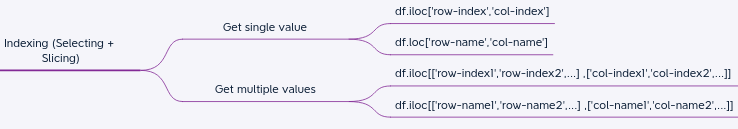
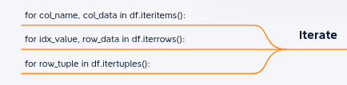

Pandas
Table of Contents
- Install
- Create using datatypes
- Pandas IO
- Display
- Convert to Numpy, List, Dictonary, json
- Rename Row/Column Name
- Add and remove rows and columns
- SetIndex and ResetIndex
- View
- TODO Dataframe Info
- Selection
- Slicing dataframe
- Update element using loc, iloc, at, funtion
- Inplace
- Filters
- DataFrame Subset
- Delete
- Change
- Sort
- For loop in pandas
- Iterator
- Append
- Pandas Concatenate
- TimeSeries
- File: 14_HandelingData-DataCleaning
- TODO Plot
- Merge
- Pivot
- Groups
- stack/unstack
- Miscellanous
- Melt
- File: nump_nditer
- TODO Copy or shallow copy
- Resampling
- Aggreagtes for ohlc
- TODO Categorical
- Resources
- Numpy
[ Home ] \( \) | \( \) \( \) [text] \( \) \( \) | \( \) \( \) [link] \( \) \( \) | \( \) \( \) [title] \( \) \( \) | \( \) \( \) [icon] \( \) \( \) | \( \) \( \) [target] \( \) \( \) | \( \) \( \) [expanded] \( \) \( \)
Install
pip install pandas
Create using datatypes
list,tuple,dict
- list of list
- dict
- list of dict
- list of tuples
- lis of serices
- series
- clipboard

List of Dictionary
import datetime as dt my_list = [{'date': dt.datetime(2022, 8, 1, 9, 15, 0), 'open': 529.05, 'high': 529.95, 'low': 528.9, 'close': 529.8, 'volume': 99353}, {'date': dt.datetime(2022, 8, 1, 9, 16, 0), 'open': 529.8, 'high': 530.35, 'low': 529.5, 'close': 529.8, 'volume': 50971}, {'date': dt.datetime(2022, 8, 1, 9, 17, 0), 'open': 529.75, 'high': 530, 'low': 528.65, 'close': 528.65, 'volume': 76733}] pd.DataFrame(my_list)
| date | open | high | low | close | volume | |
|---|---|---|---|---|---|---|
| 0 | 2022-08-01 09:15:00 | 529.05 | 529.95 | 528.90 | 529.80 | 99353 |
| 1 | 2022-08-01 09:16:00 | 529.80 | 530.35 | 529.50 | 529.80 | 50971 |
| 2 | 2022-08-01 09:17:00 | 529.75 | 530.00 | 528.65 | 528.65 | 76733 |
Dictionary of List
import pandas as pd dict_people = { "first": ["Corey", 'Jane', 'John'], "last": ["Schafer", 'Doe', 'Doe'], "email": ["CoreyMSchafer@gmail.com", 'JaneDoe@email.com', 'JohnDoe@email.com'], "employee id": ["2022B001","2022B002","2022B003"]} df = pd.DataFrame(dict_people) df
| first | last | employee id | ||
|---|---|---|---|---|
| 0 | Corey | Schafer | CoreyMSchafer@gmail.com | 2022B001 |
| 1 | Jane | Doe | JaneDoe@email.com | 2022B002 |
| 2 | John | Doe | JohnDoe@email.com | 2022B003 |
import datetime as dt my_list = [(dt.datetime(2022, 8, 1, 9, 15, 0),529.05, 529.95, 528.9, 529.8, 99353), (dt.datetime(2022, 8, 1, 9, 16, 0),529.8,530.35, 529.5,529.8, 50971), (dt.datetime(2022, 8, 1, 9, 17, 0),529.75,530,528.65,528.65,76733)] display(pd.DataFrame(my_list)) pd.DataFrame(my_list, columns=['date','open','high','low','close','volume'])
| 0 | 1 | 2 | 3 | 4 | 5 | |
|---|---|---|---|---|---|---|
| 0 | 2022-08-01 09:15:00 | 529.05 | 529.95 | 528.90 | 529.80 | 99353 |
| 1 | 2022-08-01 09:16:00 | 529.80 | 530.35 | 529.50 | 529.80 | 50971 |
| 2 | 2022-08-01 09:17:00 | 529.75 | 530.00 | 528.65 | 528.65 | 76733 |
List of List
import datetime as dt my_list = [[dt.datetime(2022, 8, 1, 9, 15, 0),529.05, 529.95, 528.9, 529.8, 99353], [dt.datetime(2022, 8, 1, 9, 16, 0),529.8,530.35, 529.5,529.8, 50971], [dt.datetime(2022, 8, 1, 9, 17, 0),529.75,530,528.65,528.65,76733]] pd.DataFrame(my_list, columns=['date','open','high','low','close','volume'])
| date | open | high | low | close | volume | |
|---|---|---|---|---|---|---|
| 0 | 2022-08-01 09:15:00 | 529.05 | 529.95 | 528.90 | 529.80 | 99353 |
| 1 | 2022-08-01 09:16:00 | 529.80 | 530.35 | 529.50 | 529.80 | 50971 |
| 2 | 2022-08-01 09:17:00 | 529.75 | 530.00 | 528.65 | 528.65 | 76733 |
List of Tuples
import datetime as dt
my_list = [(dt.datetime(2022, 8, 1, 9, 15, 0),529.05, 529.95, 528.9, 529.8, 99353),
(dt.datetime(2022, 8, 1, 9, 16, 0),529.8,530.35, 529.5,529.8, 50971),
(dt.datetime(2022, 8, 1, 9, 17, 0),529.75,530,528.65,528.65,76733)]
pd.DataFrame(my_list, columns=['date','open','high','low','close','volume'])
| date | open | high | low | close | volume | |
|---|---|---|---|---|---|---|
| 0 | 2022-08-01 09:15:00 | 529.05 | 529.95 | 528.90 | 529.80 | 99353 |
| 1 | 2022-08-01 09:16:00 | 529.80 | 530.35 | 529.50 | 529.80 | 50971 |
| 2 | 2022-08-01 09:17:00 | 529.75 | 530.00 | 528.65 | 528.65 | 76733 |
Empty Dictionary
data = pd.DataFrame(columns=['date', 'open', 'high', 'low', 'close', 'volume']) print(data)
Pandas IO
pandas io: https://pandas.pydata.org/docs/user_guide/io.html
The pandas I/O Input/Output API : to read and write data from other
format like csv, excel, json, pickel, sql, query.
Import and Export form csv
raw = """tickers,eps,revenue,price,people GOOGL,27.82,87,845,larry page WMT,4.61,484,65,n.a. MSFT,-1,85,64,bill gates RIL ,not available,50,1023,mukesh ambani TATA,5.6,-1,n.a.,ratan tata""" # raw fo = open('raw.csv','w') fo.write(raw) fo.close()
import pandas as pd # display(pd.read_csv("raw.csv")) df = pd.read_csv("raw.csv",index_col='tickers') display(df) # display(pd.read_csv("raw.csv",index_col='tickers')) # display(pd.read_csv('raw.csv',header=None,skiprows=1, names=["my_ticker","my_eps", "my_revenue", "my_price", "my_people"])) # df['people'] = df['people'].str.split(' ', expand=True)[0] # To write to csv df.to_csv('raw.csv',index=False) # Write only two columns df.to_csv("new.csv", columns=["tickers","price"], index=False) # import os # os.remove('raw.csv')
| eps | revenue | price | people | |
|---|---|---|---|---|
| tickers | ||||
| GOOGL | 27.82 | 87 | 845 | larry page |
| WMT | 4.61 | 484 | 65 | n.a. |
| MSFT | -1 | 85 | 64 | bill gates |
| RIL | not available | 50 | 1023 | mukesh ambani |
| TATA | 5.6 | -1 | n.a. | ratan tata |
Import or read form excel
%pip install openpyxl # install lib to read/write in excel file
Collecting openpyxl
Downloading openpyxl-3.1.2-py2.py3-none-any.whl (249 kB)
━━━━━━━━━━━━━━━━━━━━━━━━━━━━━━━━━━━━━━━ 250.0/250.0 kB 2.6 MB/s eta 0:00:00 MB/s eta 0:00:01:01
Collecting et-xmlfile (from openpyxl)
Using cached et_xmlfile-1.1.0-py3-none-any.whl (4.7 kB)
Installing collected packages: et-xmlfile, openpyxl
Successfully installed et-xmlfile-1.1.0 openpyxl-3.1.2
Note: you may need to restart the kernel to use updated packages.
test = pd.read_excel('modified.xlsx', index_col='Respondent')
import openpyxl # it will rewrite entire file and all the data will be lost df.to_excel('modified_1.xlsx',sheet_name='1minute',index=False) # can't write other sheets in this file
# To write multiple sheets : use below code with pd.ExcelWriter('modified_2.xlsx', mode="w",engine="openpyxl")as writer: df.to_excel(writer, sheet_name="1minute") df_temp =down_sample_by_minute(df,2) df_temp.to_excel(writer,sheet_name='2minute') df_temp =down_sample_by_minute(df,3) df_temp.to_excel(writer,sheet_name='3minute') df_temp =down_sample_by_minute(df,5) df_temp.to_excel(writer,sheet_name='5minute')
pd.read_excel("data/stock_data.xlsx","Sheet1")
| tickers | eps | revenue | price | people | |
|---|---|---|---|---|---|
| 0 | GOOGL | 27.82 | 87 | 845 | larry page |
| 1 | WMT | 4.61 | 484 | 65 | n.a. |
| 2 | MSFT | -1 | 85 | 64 | bill gates |
| 3 | RIL | not available | 50 | 1023 | mukesh ambani |
| 4 | TATA | 5.6 | -1 | n.a. | ratan tata |
def convert_people_cell(cell): if cell=="n.a.": return 'Sam Walton' return cell def convert_price_cell(cell): if cell=="n.a.": return 50 return cell df = pd.read_excel("data/stock_data.xlsx","Sheet1", converters= { 'people': convert_people_cell, 'price': convert_price_cell }) df
| tickers | eps | revenue | price | people | |
|---|---|---|---|---|---|
| 0 | GOOGL | 27.82 | 87 | 845 | larry page |
| 1 | WMT | 4.61 | 484 | 65 | Sam Walton |
| 2 | MSFT | -1 | 85 | 64 | bill gates |
| 3 | RIL | not available | 50 | 1023 | mukesh ambani |
| 4 | TATA | 5.6 | -1 | 50 | ratan tata |
html read and write
https://pandas.pydata.org/docs/reference/api/pandas.DataFrame.to_html.html
# Read html import pandas as pd df = pd.read_html('https://en.wikipedia.org/wiki/Minnesota') display(df)
[Year Republican Democratic Third party
Year No. % No. % No. %
0 2020 1484065 45.28% 1717077 52.40% 76029 2.32%
1 2016 1323232 44.93% 1367825 46.44% 254176 8.63%
2 2012 1320225 44.96% 1546167 52.65% 70169 2.39%
3 2008 1275409 43.82% 1573354 54.06% 61606 2.12%
4 2004 1346695 47.61% 1445014 51.09% 36678 1.30%
5 2000 1109659 45.50% 1168266 47.91% 160760 6.59%
6 1996 766476 34.96% 1120438 51.10% 305726 13.94%
7 1992 747841 31.85% 1020997 43.48% 579110 24.66%
8 1988 962337 45.90% 1109471 52.91% 24982 1.19%
9 1984 1032603 49.54% 1036364 49.72% 15482 0.74%
10 1980 873241 42.56% 954174 46.50% 224538 10.94%
11 1976 819395 42.02% 1070440 54.90% 60096 3.08%
12 1972 898269 51.58% 802346 46.07% 41037 2.36%
13 1968 658643 41.46% 857738 54.00% 72129 4.54%
14 1964 559624 36.00% 991117 63.76% 3721 0.24%
15 1960 757915 49.16% 779933 50.58% 4039 0.26%
16 1956 719302 53.68% 617525 46.08% 3178 0.24%
17 1952 763211 55.33% 608458 44.11% 7814 0.57%
18 1948 483617 39.89% 692966 57.16% 35643 2.94%
19 1944 527416 46.86% 589864 52.41% 8249 0.73%
20 1940 596274 47.66% 644196 51.49% 10718 0.86%
21 1936 350461 31.01% 698811 61.84% 80703 7.14%
22 1932 363959 36.29% 600806 59.91% 38078 3.80%
23 1928 560977 57.77% 396451 40.83% 13548 1.40%
24 1924 420759 51.18% 55913 6.80% 345474 42.02%
25 1920 519421 70.59% 142994 19.43% 73423 9.98%
26 1916 179544 46.35% 179152 46.25% 28668 7.40%
27 1912 64334 19.25% 106426 31.84% 163459 48.91%
28 1908 195843 59.11% 109401 33.02% 26060 7.87%
29 1904 216651 73.98% 55187 18.84% 21022 7.18%
30 1900 190461 60.21% 112901 35.69% 12949 4.09%
31 1896 193503 56.62% 139735 40.89% 8524 2.49%
32 1892 122823 45.96% 100920 37.76% 43495 16.28%
33 1888 142492 54.12% 104385 39.65% 16408 6.23%
34 1884 111685 58.78% 70065 36.87% 8267 4.35%
35 1880 93902 62.28% 53315 35.36% 3553 2.36%
36 1876 72955 58.80% 48587 39.16% 2533 2.04%
37 1872 55708 61.27% 35211 38.73% 0 0.00%
38 1868 43722 60.88% 28096 39.12% 0 0.00%
39 1864 25055 59.06% 17367 40.94% 0 0.00%
40 1860 22069 63.53% 11920 34.31% 748 2.15%,
%pip install lxml
# Export to html # creating the dataframe df = pd.DataFrame({"Name": ['Anurag', 'Manjeet', 'Shubham','Saurabh', 'Ujjawal'], "Address": ['Patna', 'Delhi', 'Coimbatore','Greater noida', 'Patna'], "ID": [20123, 20124, 20145, 20146, 20147], "Sell": [140000, 300000, 600000, 200000, 600000]}) print("Original DataFrame :") display(df) result = df.to_html() # need dependancy lxml : # print(result) text_file = open("index.html", "w") text_file.write(result) text_file.close()
JSON read and write
https://pandas.pydata.org/docs/reference/api/pandas.read_json.html
# read json form file test = pd.read_json('data/modified.json', orient='records', lines=True) india_df.to_json('data/modified.json', orient='records', lines=True) # read from string from io import StringIO df = pd.DataFrame([['a', 'b'], ['c', 'd']], index=['row 1', 'row 2'],columns=['col 1', 'col 2']) df.to_json(orient='split') # >>> '{"columns":["col 1","col 2"],"index":["row 1","row 2"],"data":[["a","b"],["c","d"]]}' pd.read_json(StringIO(_), orient='split') # >>> # col 1 col 2 #row 1 a b #row 2 c d
Markdown
%pip install tabulate
Collecting tabulate Using cached tabulate-0.9.0-py3-none-any.whl (35 kB) Installing collected packages: tabulate Successfully installed tabulate-0.9.0 Note: you may need to restart the kernel to use updated packages.
import numpy as np import pandas as pd df = pd.DataFrame({"Name": ['Anurag', 'Manjeet', 'Shubham','Saurabh', 'Ujjawal'], "Address": ['Patna', 'Delhi', 'Coimbatore','Greater noida', 'Patna'], "ID": [20123, 20124, 20145, 20146, 20147], "Sell": [140000, 300000, 600000, 200000, 600000]}) # display(df) # Converts the dataframe into str object with formatting print(df.to_markdown()) # needed dependance `tabulate`
| | Name | Address | ID | Sell | |---:|:--------|:--------------|------:|-------:| | 0 | Anurag | Patna | 20123 | 140000 | | 1 | Manjeet | Delhi | 20124 | 300000 | | 2 | Shubham | Coimbatore | 20145 | 600000 | | 3 | Saurabh | Greater noida | 20146 | 200000 | | 4 | Ujjawal | Patna | 20147 | 600000 |
Sqlite : read and write
import sqlite3 engine = sqlite3.connect('file.db') # To READ or IMPORT sql_df = pd.read_sql('sample_table', engine, index_col='Respondent') # TO EXPORT or WRITE # india_df.to_sql('sample_table', engine, if_exists='replace') india_df.to_sql('sample_table', engine, if_exists='replace') #if_exits: fail | replace |append pd.read_sql('SELECT int_column, date_column FROM test_data', engine)
Pandas Series
pd.Series([2,-1,3,5]) # Output # 0 2 # 1 -1 # 2 3 # 3 5 # dtype: int64 pd.Series([2,-1,3,5], index=['alice','bob','char', 'darwin']) # Output # alice 2 # 83 -1 # charles 3 # darwin 5 # # dtype: int64
psql table formate or org-mode table
formte
from tabulate import tabulate import pandas as pd df = pd.DataFrame({'col_two' : [0.0001, 1e-005 , 1e-006, 1e-007], 'column_3' : ['ABCD', 'ABCD', 'long string', 'ABCD']}) print(tabulate(df, headers='keys', tablefmt='psql') ) # +----+-----------+-------------+ # | | col_two | column_3 | # |----+-----------+-------------| # | 0 | 0.0001 | ABCD | # | 1 | 1e-05 | ABCD | # | 2 | 1e-06 | long string | # | 3 | 1e-07 | ABCD | # +----+-----------+-------------+ print('# '*20) # print(tabulate(df, headers='keys', tablefmt='psql').split('\n')[1:-1]) print('\n'.join(tabulate(df, headers='keys', tablefmt='psql').split('\n')[1:-1]))
+----+-----------+-------------+ | | col_two | column_3 | |----+-----------+-------------| | 0 | 0.0001 | ABCD | | 1 | 1e-05 | ABCD | | 2 | 1e-06 | long string | | 3 | 1e-07 | ABCD | +----+-----------+-------------+ # # # # # # # # # # # # # # # # # # # # | | col_two | column_3 | |----+-----------+-------------| | 0 | 0.0001 | ABCD | | 1 | 1e-05 | ABCD | | 2 | 1e-06 | long string | | 3 | 1e-07 | ABCD |
General Input Parameters
raw=""" tickers, id, eps, revenue, price, people GOOGL, 1, 27.82, 87, 845, larry page WMT, 2, 4.61, 484, 65, n.a. MSFT, 3, -1, 85, 64, bill gates RIL , 4,not available, 50, 1023, mukesh ambani TATA, 5, 5.6, -1, n.a., ratan tata""" fo = open('raw.csv','w') fo.write(raw) fo.close() pd.read_csv("raw.csv", header=None, names = ["token", "token_id","myeps","myrevenue","myprice","mypeople"], skiprows=2) # header =None : specify if header is not present # names = ["col1","col2".... "coln"] : give custom col name to table # skiprows = 2 : # skip starting rows 0,1 and start from 2nd row
| token | token_id | myeps | myrevenue | myprice | mypeople | |
|---|---|---|---|---|---|---|
| 0 | GOOGL | 1 | 27.82 | 87 | 845 | larry page |
| 1 | WMT | 2 | 4.61 | 484 | 65 | n.a. |
| 2 | MSFT | 3 | -1 | 85 | 64 | bill gates |
| 3 | RIL | 4 | not available | 50 | 1023 | mukesh ambani |
| 4 | TATA | 5 | 5.6 | -1 | n.a. | ratan tata |
Here we are cleaning outliers
pd.read_csv("raw.csv", na_values=["n.a.", "not available"])
| tickers | id | eps | revenue | price | people | |
|---|---|---|---|---|---|---|
| 0 | GOOGL | 1 | 27.82 | 87 | 845 | larry page |
| 1 | WMT | 2 | 4.61 | 484 | 65 | n.a. |
| 2 | MSFT | 3 | -1.00 | 85 | 64 | bill gates |
| 3 | RIL | 4 | NaN | 50 | 1023 | mukesh ambani |
| 4 | TATA | 5 | 5.60 | -1 | n.a. | ratan tata |
pd.read_csv("raw.csv", na_values={ 'eps': ['not available'], 'revenue': [-1], 'people': ['not available','n.a.'] })
| tickers | id | eps | revenue | price | people | |
|---|---|---|---|---|---|---|
| 0 | GOOGL | 1 | 27.82 | 87 | 845 | larry page |
| 1 | WMT | 2 | 4.61 | 484 | 65 | n.a. |
| 2 | MSFT | 3 | -1 | 85 | 64 | bill gates |
| 3 | RIL | 4 | not available | 50 | 1023 | mukesh ambani |
| 4 | TATA | 5 | 5.6 | -1 | n.a. | ratan tata |
df = pd.read_csv("raw.csv",index_col=False) # Set Index as None display(df) pd.read_csv("raw.csv",index_col=1) # Set Index as Col 1 (id) display(df)
| tickers | id | eps | revenue | price | people | |
|---|---|---|---|---|---|---|
| 0 | GOOGL | 1 | 27.82 | 87 | 845 | larry page |
| 1 | WMT | 2 | 4.61 | 484 | 65 | n.a. |
| 2 | MSFT | 3 | -1 | 85 | 64 | bill gates |
| 3 | RIL | 4 | not available | 50 | 1023 | mukesh ambani |
| 4 | TATA | 5 | 5.6 | -1 | n.a. | ratan tata |
Display

- set_option
- display.max_columns
- display.max_rows
pd.set_option('display.max_columns', 85) # show max col of 85 pd.set_option('display.max_rows', 85) # show max rows of 85
# returns how much memory each column uses in bytes. It is useful especially when we work with large dataframes data.memory_usage()
import pandas as pd df = pd.DataFrame({'col_two' : [0.0001, 1e-005 , 1e-006, 1e-007], 'column_3' : ['ABCD', 'ABCD', 'long string', 'ABCD']}) display(df) # only work on jupyter notebook # print print(df) # String type of output df
| col_two | column_3 | |
|---|---|---|
| 0 | 1.000000e-04 | ABCD |
| 1 | 1.000000e-05 | ABCD |
| 2 | 1.000000e-06 | long string |
| 3 | 1.000000e-07 | ABCD |
Convert to Numpy, List, Dictonary, json
Rename Row/Column Name
Rename Row Name:
Rename Column Name:
Change pd frame entry value
import pandas as pd df = pd.read_csv('data/survey_results_public.csv') df[['ConvertedComp','Hobbyist','Country']] # ['Respondent']#, df.rename(columns={'ConvertedComp': 'SalaryUSD'}, inplace=True)
Rename Column name
df[['ConvertedComp','Hobbyist','Country']]
| Respondent | ConvertedComp | Hobbyist | Country |
|---|---|---|---|
| 1 | nan | Yes | United Kingdom |
| 2 | nan | No | Bosnia and Herzegovina |
| 3 | 8820 | Yes | Thailand |
| 4 | 61000 | No | United States |
| 5 | nan | Yes | Ukraine |
df.rename(columns={'ConvertedComp': 'SalaryUSD'}, inplace=True) df[['SalaryUSD','Hobbyist','Country']]
| Respondent | SalarayUSD | Hobbyist | Country |
|---|---|---|---|
| 1 | nan | Yes | United Kingdom |
| 2 | nan | No | Bosnia and Herzegovina |
| 3 | 8820 | Yes | Thailand |
| 4 | 61000 | No | United States |
| 5 | nan | Yes | Ukraine |
Add and remove rows and columns
people = { "first": ["Corey", 'Jane', 'John'], "last": ["Schafer", 'Doe', 'Doe'], "email": ["CoreyMSchafer@gmail.com", 'JaneDoe@email.com', 'JohnDoe@email.com'], "employee id": ["2022B001","2022B002","2022B003"] } import pandas as pd df = pd.DataFrame(people)
| first | last | employee id | ||
|---|---|---|---|---|
| 0 | Corey | Schafer | CoreyMSchafer@gmail.com | 2022B001 |
| 1 | Jane | Doe | JaneDoe@email.com | 2022B002 |
| 2 | John | Doe | JohnDoe@email.com | 2022B003 |
Add column
df['full name'] = df['first'] + ' ' + df['last'] df
| first | last | employee id | full name | ||
|---|---|---|---|---|---|
| 0 | Corey | Schafer | CoreyMSchafer@gmail.com | 2022B001 | Corey Schafer |
| 1 | Jane | Doe | JaneDoe@email.com | 2022B002 | Jane Doe |
| 2 | John | Doe | JohnDoe@email.com | 2022B003 | John Doe |
Remove column
df.drop(columns=[ 'last','full name'], inplace=True)
| first | employee id | ||
|---|---|---|---|
| 0 | Corey | CoreyMSchafer@gmail.com | 2022B001 |
| 1 | Jane | JaneDoe@email.com | 2022B002 |
| 2 | John | JohnDoe@email.com | 2022B003 |
df.drop(columns=['first', 'last'], inplace=True)
| employee id | full name | ||
|---|---|---|---|
| 0 | CoreyMSchafer@gmail.com | 2022B001 | Corey Schafer |
| 1 | JaneDoe@email.com | 2022B002 | Jane Doe |
| 2 | JohnDoe@email.com | 2022B003 | John Doe |
Creating column
df[['first', 'last']] = df['full_name'].str.split(' ', expand=True)
| employee id | full name | first | last | ||
|---|---|---|---|---|---|
| 0 | CoreyMSchafer@gmail.com | 2022B001 | Corey Schafer | Corey | Schafer |
| 1 | JaneDoe@email.com | 2022B002 | Jane Doe | Jane | Doe |
| 2 | JohnDoe@email.com | 2022B003 | John Doe | John | Doe |
Add new row in dataframe using append
df.append({'first': 'Tony'}, ignore_index=True) # NOTE this method is deprecated in future version use pandas.concat
Add two dataframe in row using append
people = { 'first': ['Tony', 'Steve'], 'last': ['Stark', 'Rogers'], 'email': ['IronMan@avenge.com', 'Cap@avenge.com'] } df2 = pd.DataFrame(people)
| full name | first | last | ||
|---|---|---|---|---|
| 0 | IronMan@avenge.com | Tony Stark | Tony | Stark |
| 1 | Cap@avenge.com | Steve Rogers | Steve | Rogers |
df.append(df2, ignore_index=True, sort=False)
| first | last | employee id | ||
|---|---|---|---|---|
| 0 | Corey | Schafer | CoreyMSchafer@gmail.com | 2022B001 |
| 1 | Jane | Doe | JaneDoe@email.com | 2022B002 |
| 2 | John | Doe | JohnDoe@email.com | 2022B003 |
| 3 | Tony | Stark | IronMan@avenge.com | nan |
| 4 | Steve | Rogers | Cap@avenge.com | nan |
Remove row with index no or by value
df.drop(index=4)
| first | last | employee id | ||
|---|---|---|---|---|
| 0 | Corey | Schafer | CoreyMSchafer@gmail.com | 2022B001 |
| 1 | Jane | Doe | JaneDoe@email.com | 2022B002 |
| 2 | John | Doe | JohnDoe@email.com | 2022B003 |
| 3 | Tony | Stark | IronMan@avenge.com | nan |
filt = df['last'] == 'Doe' df =df.drop(index=df[filt].index)
| first | last | employee id | ||
|---|---|---|---|---|
| 0 | Corey | Schafer | CoreyMSchafer@gmail.com | 2022B001 |
| 3 | Tony | Stark | IronMan@avenge.com | nan |
| 4 | Steve | Rogers | Cap@avenge.com | nan |
SetIndex and ResetIndex
The index of pandas can be either a integer or float or string we can set the index of the data frame like
df.set_index("employee id")
| first | last | ||
|---|---|---|---|
| employee id | |||
| 2022B001 | Corey | Schafer | CoreyMSchafer@gmail.com |
| 2022B002 | Jane | Doe | JaneDoe@email.com |
| 2022B003 | John | Doe | JohnDoe@email.com |
We can reset the index by
df.reset_index(inplace=True)
| first | last | employee id | ||
|---|---|---|---|---|
| 0 | Corey | Schafer | CoreyMSchafer@gmail.com | 2022B001 |
| 1 | Jane | Doe | JaneDoe@email.com | 2022B002 |
| 2 | John | Doe | JohnDoe@email.com | 2022B003 |
View
df.tail(10) df.head(10) slicing, loc, iloc
df = pd.read_csv('https://raw.githubusercontent.com/mwaskom/seaborn-data/master/iris.csv') # display(df.head(5)) print('df[0:3]') display(df[0:3]) print("df[['sepal_length', 'sepal_width']]") display(df[['sepal_length', 'sepal_width']]) # display(df[0:5][['sepal_length', 'sepal_width']]) # display(df[0] ) #[['sepal_length', 'sepal_width']])
iris
| sepal_length | sepal_width | petal_length | petal_width | species | |
|---|---|---|---|---|---|
| 0 | 5.1 | 3.5 | 1.4 | 0.2 | setosa |
| 1 | 4.9 | 3.0 | 1.4 | 0.2 | setosa |
| 2 | 4.7 | 3.2 | 1.3 | 0.2 | setosa |
| 3 | 4.6 | 3.1 | 1.5 | 0.2 | setosa |
| 4 | 5.0 | 3.6 | 1.4 | 0.2 | setosa |
| ... | ... | ... | ... | ... | ... |
| 145 | 6.7 | 3.0 | 5.2 | 2.3 | virginica |
| 146 | 6.3 | 2.5 | 5.0 | 1.9 | virginica |
| 147 | 6.5 | 3.0 | 5.2 | 2.0 | virginica |
| 148 | 6.2 | 3.4 | 5.4 | 2.3 | virginica |
| 149 | 5.9 | 3.0 | 5.1 | 1.8 | virginica |
150 rows × 5 columns
TODO Dataframe Info
change dataset to small dataset
- Shape, no of rows, print n rows, stats, data type, unique, col, index
import pandas as pd df = pd.read_csv('data/survey_results_public.csv')
Shape, Len, Columns Name List
print(df.shape) # (88883, 85) print(len(df)) # 88883 print(df.columns) # List of all Columns #>>> Index(['Respondent', 'MainBranch', 'Hobbyist', 'OpenSourcer', 'OpenSource', 'Employment', 'Country', ])
(88883, 85)
88883
Index(['Respondent', 'MainBranch', 'Hobbyist', 'OpenSourcer', 'OpenSource',
'Employment', 'Country', 'Student', 'EdLevel', 'UndergradMajor',
'EduOther', 'OrgSize', 'DevType', 'YearsCode', 'Age1stCode',
'YearsCodePro', 'CareerSat', 'JobSat', 'MgrIdiot', 'MgrMoney',
'MgrWant', 'JobSeek', 'LastHireDate', 'LastInt', 'FizzBuzz',
'JobFactors', 'ResumeUpdate', 'CurrencySymbol', 'CurrencyDesc',
'CompTotal', 'CompFreq', 'ConvertedComp', 'WorkWeekHrs', 'WorkPlan',
'WorkChallenge', 'WorkRemote', 'WorkLoc', 'ImpSyn', 'CodeRev',
'CodeRevHrs', 'UnitTests', 'PurchaseHow', 'PurchaseWhat',
'LanguageWorkedWith', 'LanguageDesireNextYear', 'DatabaseWorkedWith',
'DatabaseDesireNextYear', 'PlatformWorkedWith',
'PlatformDesireNextYear', 'WebFrameWorkedWith',
'WebFrameDesireNextYear', 'MiscTechWorkedWith',
'MiscTechDesireNextYear', 'DevEnviron', 'OpSys', 'Containers',
'BlockchainOrg', 'BlockchainIs', 'BetterLife', 'ITperson', 'OffOn',
'SocialMedia', 'Extraversion', 'ScreenName', 'SOVisit1st',
'SOVisitFreq', 'SOVisitTo', 'SOFindAnswer', 'SOTimeSaved',
'SOHowMuchTime', 'SOAccount', 'SOPartFreq', 'SOJobs', 'EntTeams',
'SOComm', 'WelcomeChange', 'SONewContent', 'Age', 'Gender', 'Trans',
'Sexuality', 'Ethnicity', 'Dependents', 'SurveyLength', 'SurveyEase'],
dtype='object')
head, tail
display(df.head(3)) display(df.tail(3))
| Respondent | MainBranch | Hobbyist | OpenSourcer | OpenSource | Employment | Country | Student | EdLevel | UndergradMajor | ... | WelcomeChange | SONewContent | Age | Gender | Trans | Sexuality | Ethnicity | Dependents | SurveyLength | SurveyEase | |
|---|---|---|---|---|---|---|---|---|---|---|---|---|---|---|---|---|---|---|---|---|---|
| 0 | 1 | I am a student who is learning to code | Yes | Never | The quality of OSS and closed source software ... | Not employed, and not looking for work | United Kingdom | No | Primary/elementary school | NaN | ... | Just as welcome now as I felt last year | Tech articles written by other developers;Indu... | 14.0 | Man | No | Straight / Heterosexual | NaN | No | Appropriate in length | Neither easy nor difficult |
| 1 | 2 | I am a student who is learning to code | No | Less than once per year | The quality of OSS and closed source software ... | Not employed, but looking for work | Bosnia and Herzegovina | Yes, full-time | Secondary school (e.g. American high school, G... | NaN | ... | Just as welcome now as I felt last year | Tech articles written by other developers;Indu... | 19.0 | Man | No | Straight / Heterosexual | NaN | No | Appropriate in length | Neither easy nor difficult |
| 2 | 3 | I am not primarily a developer, but I write co... | Yes | Never | The quality of OSS and closed source software ... | Employed full-time | Thailand | No | Bachelor’s degree (BA, BS, B.Eng., etc.) | Web development or web design | ... | Just as welcome now as I felt last year | Tech meetups or events in your area;Courses on... | 28.0 | Man | No | Straight / Heterosexual | NaN | Yes | Appropriate in length | Neither easy nor difficult |
3 rows × 85 columns
Describe
df.describe()
| Respondent | CompTotal | ConvertedComp | WorkWeekHrs | CodeRevHrs | Age | |
|---|---|---|---|---|---|---|
| count | 88883.000000 | 5.594500e+04 | 5.582300e+04 | 64503.000000 | 49790.000000 | 79210.000000 |
| mean | 44442.000000 | 5.519014e+11 | 1.271107e+05 | 42.127197 | 5.084308 | 30.336699 |
| std | 25658.456325 | 7.331926e+13 | 2.841523e+05 | 37.287610 | 5.513931 | 9.178390 |
| min | 1.000000 | 0.000000e+00 | 0.000000e+00 | 1.000000 | 0.000000 | 1.000000 |
| 25% | 22221.500000 | 2.000000e+04 | 2.577750e+04 | 40.000000 | 2.000000 | 24.000000 |
| 50% | 44442.000000 | 6.200000e+04 | 5.728700e+04 | 40.000000 | 4.000000 | 29.000000 |
| 75% | 66662.500000 | 1.200000e+05 | 1.000000e+05 | 44.750000 | 6.000000 | 35.000000 |
| max | 88883.000000 | 1.000000e+16 | 2.000000e+06 | 4850.000000 | 99.000000 | 99.000000 |
Info
df.info()
<class 'pandas.core.frame.DataFrame'> RangeIndex: 88883 entries, 0 to 88882 Data columns (total 85 columns): # Column Non-Null Count Dtype --- ------ -------------- ----- 0 Respondent 88883 non-null int64 1 MainBranch 88331 non-null object 2 Hobbyist 88883 non-null object 3 OpenSourcer 88883 non-null object 4 OpenSource 86842 non-null object 5 Employment 87181 non-null object 6 Country 88751 non-null object 7 Student 87014 non-null object 8 EdLevel 86390 non-null object 9 UndergradMajor 75614 non-null object 10 EduOther 84260 non-null object 11 OrgSize 71791 non-null object 12 DevType 81335 non-null object 13 YearsCode 87938 non-null object 14 Age1stCode 87634 non-null object 15 YearsCodePro 74331 non-null object 16 CareerSat 72847 non-null object 17 JobSat 70988 non-null object 18 MgrIdiot 61159 non-null object 19 MgrMoney 61157 non-null object 20 MgrWant 61232 non-null object 21 JobSeek 80555 non-null object 22 LastHireDate 79854 non-null object 23 LastInt 67155 non-null object 24 FizzBuzz 71344 non-null object 25 JobFactors 79371 non-null object 26 ResumeUpdate 77877 non-null object 27 CurrencySymbol 71392 non-null object 28 CurrencyDesc 71392 non-null object 29 CompTotal 55945 non-null float64 30 CompFreq 63268 non-null object 31 ConvertedComp 55823 non-null float64 32 WorkWeekHrs 64503 non-null float64 33 WorkPlan 68914 non-null object 34 WorkChallenge 68141 non-null object 35 WorkRemote 70284 non-null object 36 WorkLoc 70055 non-null object 37 ImpSyn 71779 non-null object 38 CodeRev 70390 non-null object 39 CodeRevHrs 49790 non-null float64 40 UnitTests 62668 non-null object 41 PurchaseHow 61108 non-null object 42 PurchaseWhat 62029 non-null object 43 LanguageWorkedWith 87569 non-null object 44 LanguageDesireNextYear 84088 non-null object 45 DatabaseWorkedWith 76026 non-null object 46 DatabaseDesireNextYear 69147 non-null object 47 PlatformWorkedWith 80714 non-null object 48 PlatformDesireNextYear 77443 non-null object 49 WebFrameWorkedWith 65022 non-null object 50 WebFrameDesireNextYear 62944 non-null object 51 MiscTechWorkedWith 59586 non-null object 52 MiscTechDesireNextYear 64511 non-null object 53 DevEnviron 87317 non-null object 54 OpSys 87851 non-null object 55 Containers 85366 non-null object 56 BlockchainOrg 48175 non-null object 57 BlockchainIs 60165 non-null object 58 BetterLife 86269 non-null object 59 ITperson 87141 non-null object 60 OffOn 86663 non-null object 61 SocialMedia 84437 non-null object 62 Extraversion 87305 non-null object 63 ScreenName 80486 non-null object 64 SOVisit1st 83877 non-null object 65 SOVisitFreq 88263 non-null object 66 SOVisitTo 88086 non-null object 67 SOFindAnswer 87816 non-null object 68 SOTimeSaved 86344 non-null object 69 SOHowMuchTime 68378 non-null object 70 SOAccount 87828 non-null object 71 SOPartFreq 74692 non-null object 72 SOJobs 88066 non-null object 73 EntTeams 87841 non-null object 74 SOComm 88131 non-null object 75 WelcomeChange 85855 non-null object 76 SONewContent 69560 non-null object 77 Age 79210 non-null float64 78 Gender 85406 non-null object 79 Trans 83607 non-null object 80 Sexuality 76147 non-null object 81 Ethnicity 76668 non-null object 82 Dependents 83059 non-null object 83 SurveyLength 86984 non-null object 84 SurveyEase 87081 non-null object dtypes: float64(5), int64(1), object(79) memory usage: 57.6+ MB
Type
df.dtypes
Respondent int64
MainBranch object
Hobbyist object
OpenSourcer object
OpenSource object
...
Sexuality object
Ethnicity object
Dependents object
SurveyLength object
SurveyEase object
Length: 85, dtype: object
Unique
people = { "id":["2017A001","2017A002","2017A003"], "first": ["Corey", 'Jane', 'John'], "last": ["Schafer", 'Doe', 'Doe'], "email": ["CoreyMSchafer@gmail.com", 'JaneDoe@email.com', 'JohnDoe@email.com'] } df = pd.DataFrame(people) df.set_index('id',inplace=True) display(df) for col in df: print(df[col].unique())
| first | last | ||
|---|---|---|---|
| id | |||
| 2017A001 | Corey | Schafer | CoreyMSchafer@gmail.com |
| 2017A002 | Jane | Doe | JaneDoe@email.com |
| 2017A003 | John | Doe | JohnDoe@email.com |
['Corey' 'Jane' 'John'] ['Schafer' 'Doe'] ['CoreyMSchafer@gmail.com' 'JaneDoe@email.com' 'JohnDoe@email.com']
Example unique element in row/column
To get the unique value in all column
df['email'].unique()
people = { "first": ["Corey", 'Jane', 'John'], "last": ["Schafer", 'Doe', 'Doe'], "email": ["CoreyMSchafer@gmail.com", 'JaneDoe@email.com', 'JohnDoe@email.com'], "employee id": ["2022B001","2022B002","2022B003"] } import pandas as pd df = pd.DataFrame(people)
for col in df: print(df[col].unique())
['Corey' 'Jane' 'John'] ['Schafer' 'Doe'] ['CoreyMSchafer@gmail.com' 'JaneDoe@email.com' 'JohnDoe@email.com']
Index
df.index # List all Index:>>> Index(['2017A001', '2017A002', '2017A003'], dtype='object', name='id') df.index.name # Index Col Name:>>> 'id' df.index.value #
Index(['2017A001', '2017A002', '2017A003'], dtype='object', name='id')
df.index.name
'id'
df.index.values
array(['2017A001', '2017A002', '2017A003'], dtype=object)
df.shape # (88883,85) # no.of rows:88883 , # no.of columns: 85
(4, 2)
display(df) # style works only in jupyter not in terminal print(df) # plane text
TODO Stats
data.mean() data.sample(n=8) data.isnull() # table for True/False, if entry is Null -> True data.isna() # is nan or not data.isna().any() # sum of missing value df.isnull().sum()
my_list = [{'date': datetime.datetime(2022, 8, 1, 9, 15, tzinfo=tzoffset(None, 19800)), 'open': 529.05, 'high': 529.95, 'low': 528.9, 'close': 529.8, 'volume': 99353}, {'date': datetime.datetime(2022, 8, 1, 9, 16, tzinfo=tzoffset(None, 19800)), 'open': 529.8, 'high': 530.35, 'low': 529.5, 'close': 529.8, 'volume': 50971}] data = pd.DataFrame(my_list) print(df['open']) print(df.open) print(df[['open','volue' ]]) # operations df['high'].max() df['low'].min() df['close'],std() df.desrcribe() # cal statistics: count(rows), mean, std, min, 25%, 50%, 75% max # get the row where df['high'].max() # df['high'].max() df[df.high==df.high.max()] df[df['high']==df['high'].max()] # give row value {'date': datetime.datetime(2022, 8, 1, 9, 16, tzinfo=tzoffset(None, 19800)), # view only ohlc data df[['open','high','close','volume']][df['high']==df['high'].max()]
Statistic Function
There are some special methods available in Pandas which makes our calculation easier. Let’s Mean:df.mean() – mean of all columns Median:df.median() – median of each column Standard Deviation:df.std() – standard deviation of each column Max:df.max() – highest value in each column Min:df.min() – lowest value in each column Count:df.count() – number of non-null values in each DataFrame column Describe:df.describe() – Summary statistics for numerical columns
Get all Header or Col Name or Field
# Import pandas package import pandas as pd # making data frame data = pd.read_csv("nba.csv") df.columns # Index(['first', 'last', 'email', 'employee id'], dtype='object') # iterating the columns for col in data.columns: print(col) # Method 2 print(list(data.columns) # Method 3 print(data.keys()) # Method 4 print(list(data.columns.values)) # Method 5 print(list(data.columns.values.tolist()))
Selection
data access methods, .at, .iat, .loc and .iloc.
Lables (.loc)
We can access the row using index value(loc) or index no(iloc)
By default the index is not set then the index value will be row number starting with zero
If nothing else is specified, the values are labeled with their index number. First value has index 0, second value has index 1 etc.
This label can be used to access a specified value.
df.set_index("employee id",inplace=True) df.loc['2022B003'] # Note need to set index
first John last Doe email JohnDoe@email.com Name: 2022B003, dtype: object
df.loc['2022B002':'2022B003'] # Note need to set index
| employee id | first | last | |
|---|---|---|---|
| 2022B002 | Jane | Doe | JaneDoe@email.com |
| 2022B003 | John | Doe | JohnDoe@email.com |
Slice by row and column
df.loc['2022B002':'2022B003',['first','email']] # Note need to set index
| employee id | first | |
|---|---|---|
| 2022B002 | Jane | JaneDoe@email.com |
| 2022B003 | John | JohnDoe@email.com |
people = { "first": ["Corey", 'Jane', 'John'], "last": ["Schafer", 'Doe', 'Doe'], "email": ["CoreyMSchafer@gmail.com", 'JaneDoe@email.com', 'JohnDoe@email.com'], "employee id": ["2022B001","2022B002","2022B003"] } df = pd.DataFrame(people) print(f'df.index.name :{df.index.name}') print(f'df.index.values:{df.index.values}') df.set_index("employee id",inplace=True) print('after setting index as employee') print(f'df.index.name :{df.index.name}') print(f'df.index.values:{df.index.values}') display(df) df.index[df["first"]=='Jane'].tolist()
result
df.index.name :None
df.index.values:[0 1 2]
after setting index as employee
df.index.name :employee id
df.index.values:['2022B001' '2022B002' '2022B003']
iloc
iloc is simillar to loc insted of index value we will use index number
df.set_index("employee id",inplace=True) df.iloc[2] # Note need to set index
first John last Doe email JohnDoe@email.com Name: 2022B003, dtype: object
df.iloc[1:3] # Note need to set index
| first | last | employee id | ||
|---|---|---|---|---|
| 1 | Jane | Doe | JaneDoe@email.com | 2022B002 |
| 2 | John | Doe | JohnDoe@email.com | 2022B003 |
Slice by row and column in iloc
df.iloc[[1,2],[0,2]]
| first | ||
|---|---|---|
| 1 | Jane | JaneDoe@email.com |
| 2 | John | JohnDoe@email.com |
set value using iloc
idx = start_idx # 388 # for idx in range(data.shape[0]): diff = data.iloc[idx]['close'] - data.iloc[idx-1]['close'] if diff >=0: data.iloc[idx,data.columns.get_loc("gain")] = diff data.iloc[idx,data.columns.get_loc('loss')] = 0 else: data.iloc[idx,data.columns.get_loc("gain")] = 0 data.iloc[idx,data.columns.get_loc('loss')] = -1*diff
at
iat
loc2iloc and iloc2loc
df.iloc[0].name # give loc Timestamp('2020-01-01 09:15:00') named_index = df.iloc[0].name df.index.get_loc(named_index) # gives iloc value
df.index.get_loc(window_stop_row.name)
#In [131]: dates = pd.date_range('1/1/2000', periods=8) df = pd.DataFrame(np.random.randn(8, 4), index=dates, columns=['A', 'B', 'C', 'D']) df #Out[131]: # A B C D #2000-01-01 0.095234 -1.000863 0.899732 -1.742152 #2000-01-02 -0.517544 -1.274137 1.734024 -1.369487 #2000-01-03 0.134112 1.964386 -0.120282 0.573676 #2000-01-04 -0.737499 -0.581444 0.528500 -0.737697 #2000-01-05 -1.777800 0.795093 0.120681 0.524045 #2000-01-06 -0.048432 -0.751365 -0.760417 -0.181658 #2000-01-07 -0.570800 0.248608 -1.428998 -0.662014 #2000-01-08 -0.147326 0.717392 3.138620 1.208639 #In [133]: window_stop_row = df[df.index < '2000-01-04'].iloc[-1] window_stop_row.name #Out[133]: #Timestamp('2000-01-03 00:00:00', offset='D') #In [134]: df.index.get_loc(window_stop_row.name) #Out[134]: #2 # iloc value
Slicing dataframe
Get the specific column for dataframe
df['email']
0 CoreyMSchafer@gmail.com 1 JaneDoe@email.com 2 JohnDoe@email.com Name: email, dtype: object
or you can use as class elements to get the column
df.email
0 CoreyMSchafer@gmail.com 1 JaneDoe@email.com 2 JohnDoe@email.com Name: email, dtype: object
Slice Column for dataframe
df[['last', 'email']]
| last | ||
|---|---|---|
| 0 | Schafer | CoreyMSchafer@gmail.com |
| 1 | Doe | JaneDoe@email.com |
| 2 | Doe | JohnDoe@email.com |
Slice row form dataframe
df[1:3]
| first | last | employee id | ||
|---|---|---|---|---|
| 1 | Jane | Doe | JaneDoe@email.com | 2022B002 |
| 2 | John | Doe | JohnDoe@email.com | 2022B003 |
df.columns
Index(['first', 'last', 'email', 'employee id'], dtype='object')
To get the header list of dataframe
list(df.columns.values)
If index is datetime.date we can slice
df['2022-01-01' :'2022-02-01'] we give you sliced dataframe from horizontal
You can get slice from loc and iloc als
Update element using loc, iloc, at, funtion
Update element in data fram
people = { "first": ["Corey", 'Jane', 'John'], "last": ["Schafer", 'Doe', 'Doe'], "email": ["CoreyMSchafer@gmail.com", 'JaneDoe@email.com', 'JohnDoe@email.com'], "employee id": ["2022B001","2022B002","2022B003"] } df = pd.DataFrame(people)
| first | last | employee id | ||
|---|---|---|---|---|
| 0 | Corey | Schafer | CoreyMSchafer@gmail.com | 2022B001 |
| 1 | Jane | Doe | JaneDoe@email.com | 2022B002 |
| 2 | John | Doe | JohnDoe@email.com | 2022B003 |
Using loc
df.loc[2] = ['John', 'Smith', 'JohnSmith@email.com']
| first | last | employee id | ||
|---|---|---|---|---|
| 0 | Corey | Schafer | CoreyMSchafer@gmail.com | 2022B001 |
| 1 | Jane | Doe | JaneDoe@email.com | 2022B002 |
| 2 | John | Smith | JohnSmith@email.com | 2022B003 |
df[filt]['last'] = 'Smith' #Error: Can't copy SettingWithCopyWarning df.loc[2, 'last'] = 'Smith'
Using at
simillar to loc
df.loc[2, 'last'] = 'Smith' df.at[2, 'last'] = 'Doe'
Using fuctions
df['email'].str.upper()
0 COREYMSCHAFER@GMAIL.COM 1 JANEDOE@EMAIL.COM 2 JOHNDOE@EMAIL.COM Name: email, dtype: object
df['email'].apply(len)
0 23 1 17 2 17 Name: email, dtype: int64
def update_email(email): return email.capitalize() df['email'].apply(update_email)
0 Coreymschafer@gmail.com 1 Janedoe@email.com 2 Johndoe@email.com Name: email, dtype: object
Using lambda
df['email'].apply(lambda x: x.upper())
0 coreymschafer@gmail.com 1 janedoe@email.com 2 johndoe@email.com Name: email, dtype: object
Using list compression
df.columns = [x.upper() for x in df.columns]
| FIRST | LAST | EMPLOYEE ID | ||
|---|---|---|---|---|
| 0 | Corey | Schafer | CoreyMSchafer@gmail.com | 2022B001 |
| 1 | Jane | Doe | JaneDoe@email.com | 2022B002 |
| 2 | John | Smith | JohnSmith@email.com | 2022B003 |
Using pandas 'apply'
df['email'].apply(len)
0 23 1 17 2 17 Name: email, dtype: int64
df.apply(len, axis='columns')
0 3 1 3 2 3 dtype: int64
df.apply(pd.Series.min) #first Corey #last Doe #email coreymschafer@gmail.com #dtype: object
df.apply(lambda x: x.min()) #first Corey #last Doe #email coreymschafer@gmail.com #dtype: object
Using pandas 'applymap''
df.applymap(len) # first last email #0 5 7 23 #1 4 3 17 #2 4 5 17 df.applymap(str.lower) # first last email #0 corey schafer coreymschafer@gmail.com #1 jane doe janedoe@email.com #2 john smith johndoe@email.com
Using pandas 'map'
df['Hobbyist']
Respondent
1 Yes
2 No
3 Yes
4 No
5 Yes
...
88377 Yes
88601 No
88802 No
88816 No
88863 Yes
Name: Hobbyist, Length: 88883, dtype: object
df['Hobbyist'].map({'Yes': True, 'No': False}) df['Hobbyist'] = df['Hobbyist'].map({'Yes': True, 'No': False}) df['Hobbyist']
Respondent
1 True
2 False
3 True
4 False
5 True
...
88377 True
88601 False
88802 False
88816 False
88863 True
Name: Hobbyist, Length: 88883, dtype: bool
Error in map if some elements in column is not specific
df['first'].map({'Corey': 'Chris', 'Jane': 'Mary'}) #0 Chris #1 Mary #2 NaN #Name: first, dtype: object df['first'].replace({'Corey': 'Chris', 'Jane': 'Mary'}) #0 Chris #1 Mary #2 Smit #Name: first, dtype: object
Inplace
In general any operation performed in dataframe will not result in dataframe we need to assigne the change to the dataframe or
Pandas has inbuild function to save the change performed on dataframe eg:
df.set_index("employee id") # no change in df df = df.set_index("employee id") # df is updated #or df.set_index("employee id", inplace=True) # df is updated
Filters
https://datatofish.com/filter-pandas-dataframe/ https://www.statology.org/pandas-filter-by-index-value/
Filter Operator
| Filter Operator | |
| Binary Operator | |
| Operator | Function |
| ' | ' | OR Operator |
| ' & ' | AND Operator |
| ' ~ ' | Not Operator |
| ' ( ) ' | Cascade Operator |
| Arthimatic Operation | |
| ' < ' | Less than Operator |
| ' > ' | Greater than Operator |
| ' >=' | Less than Equal Operator |
| ' <= ' | Greater than Equal Operator |
| ' == ' | Equal to Operator |
# '|': or comparisoin operator # '&' : and comparison operator # '~' : not operator filt = (df['last'] == 'Schafer') | (df['first'] == 'John') filt # Result # 0 True # 1 False # 2 True # dtype: bool df[filt]
| first | last | employee id | ||
|---|---|---|---|---|
| 0 | Corey | Schafer | CoreyMSchafer@gmail.com | 2022B001 |
| 2 | John | Doe | JohnDoe@email.com | 2022B003 |
df[~filt] # select which is not filtered
| first | last | employee id | ||
|---|---|---|---|---|
| 1 | Jane | Doe | JaneDoe@email.com | 2022B002 |
Filter column 'LanguageWorkedWith' where it shouldn't have any NaN value
print(df['LanguageWorkedWith'])
Respondent
1 HTML/CSS;Java;JavaScript;Python
2 C++;HTML/CSS;Python
3 HTML/CSS
4 C;C++;C#;Python;SQL
5 C++;HTML/CSS;Java;JavaScript;Python;SQL;VBA
...
88377 HTML/CSS;JavaScript;Other(s):
88601 NaN
88802 NaN
88816 NaN
88863 Bash/Shell/PowerShell;HTML/CSS;Java;JavaScript...
Name: LanguageWorkedWith, Length: 88883, dtype: object
filt
Respondent
1 True
2 True
3 False
4 True
5 True
...
88377 False
88601 False
88802 False
88816 False
88863 False
Name: LanguageWorkedWith, Length: 88883, dtype: bool
df.loc[filt]
Respondent ... 1 I am a student who is learning to code Yes ... Appropriate in length Neither easy nor difficult 2 I am a student who is learning to code No ... Appropriate in length Neither easy nor difficult 4 I am a developer by profession No ... Appropriate in length Easy 5 I am a developer by profession Yes ... Appropriate in length Easy 8 I code primarily as a hobby Yes ... Appropriate in length Neither easy nor difficult ... ... ... ... ... ... 84539 NaN Yes ... Appropriate in length Easy 85738 NaN Yes ... Too short Easy 86566 NaN Yes ... Appropriate in length Easy 87739 NaN Yes ... Appropriate in length Easy 88212 NaN No ... Appropriate in length Easy [36443 rows x 84 columns]
df.loc[filt, 'LanguageWorkedWith']
Respondent
1 HTML/CSS;Java;JavaScript;Python
2 C++;HTML/CSS;Python
4 C;C++;C#;Python;SQL
5 C++;HTML/CSS;Java;JavaScript;Python;SQL;VBA
8 Bash/Shell/PowerShell;C;C++;HTML/CSS;Java;Java...
...
84539 Bash/Shell/PowerShell;C;C++;HTML/CSS;Java;Java...
85738 Bash/Shell/PowerShell;C++;Python;Ruby;Other(s):
86566 Bash/Shell/PowerShell;HTML/CSS;Python;Other(s):
87739 C;C++;HTML/CSS;JavaScript;PHP;Python;SQL
88212 HTML/CSS;JavaScript;Python
Name: LanguageWorkedWith, Length: 36443, dtype: object
filter get named index
filter1 = (edf['breakout']==True) # edf[(edf['breakout']==True)] # display(filter1) print(filter1.index) print(filter1.index.values)
result
DatetimeIndex(['2022-08-01 09:15:00', '2022-08-01 09:17:00',
'2022-08-01 09:19:00', '2022-08-01 09:21:00',
'2022-08-01 09:23:00', '2022-08-01 09:25:00',
'2022-08-01 09:27:00', '2022-08-01 09:29:00',
'2022-08-01 09:31:00', '2022-08-01 09:33:00',
...
'2022-08-30 15:11:00', '2022-08-30 15:13:00',
'2022-08-30 15:15:00', '2022-08-30 15:17:00',
'2022-08-30 15:19:00', '2022-08-30 15:21:00',
'2022-08-30 15:23:00', '2022-08-30 15:25:00',
'2022-08-30 15:27:00', '2022-09-01 09:15:00'],
dtype='datetime64[ns]', name='date', length=3741, freq=None)
['2022-08-01T09:15:00.000000000' '2022-08-01T09:17:00.000000000'
'2022-08-01T09:19:00.000000000' ... '2022-08-30T15:25:00.000000000'
'2022-08-30T15:27:00.000000000' '2022-09-01T09:15:00.000000000']
DataFrame Subset
- DataFrame Subset
- Selecting Columns
- Slicing (Row)
- Indexing (Selectoing + Slicing)
- Filtering (Selecting based on condition)
- Sample
Selection (Columns)
- Select single column
- Select multiple columns
- Other Methods
Slicing (Row)
- Slice singgle row
- df.loc[‘row-index'], df.iloc
- Slice Multiple row
- df.iloc ,
- Other Methods
df.loc['row-index'], df.iloc[['row-index']] df.iloc [['row-index','row-index1']]

Indexing (Selectoing + Slicing)
- Get Single Value
- Get Multiple values
Conditions in DataFrame
- df.col1 > 10
- <
- between(10,15)
- isna()
- ‘&' and operation
- ‘|' or operation
- ‘~' not operator
- ‘isin()'
- ==
- String
- isupper
- islower
Filtering (Selecting based on condition)
- Sample
import pandas as pd df = pd.read_csv('data/survey_results_public.csv')
filt = df['LanguageWorkedWith'].str.contains('Python', na=False) df['LanguageWorkedWith'].str.contains('Python')
filt # df['LanguageWorkedWith']
df.loc[filt, 'LanguageWorkedWith']
# '|': or comparisoin operator # '&' : and comparison operator filt = (df['last'] == 'Schafer') | (df['first'] == 'John') # df[filt] filt df.loc[~ffilt, 'email'] # ~ means : not in the filter df.iloc[filt]
Delete

# single row df.drop(["row_idx"], axis=0) # multi row df.drop(["row_idx"],axis=0) # single col df.drop(["col_name"], axis=1) # multi col df.drop(["col_name1","col_name2", "col_name3"],axis=1) # duplicates : matchs full row df.drop_duplicate() # duplicate col df.drop_duplicate(['col1','col2']) # drop row if it contain NaN df.dropna() # drop row if has all NaNs df.dropna(how='all') # drop col if has NaN df.drop(axis=1)
Drop Column
df = df.drop('column_name', axis=1)
df = df.drop(columns=['column_nameA', 'column_nameB'])
df.drop('column_name', axis=1, inplace=True)
df.drop(['column_nameA', 'column_nameB'], axis=1, inplace=True)
del df['column_name']
Drop Row
data.drop(["row_name1", "row_name2", "row_name3","row_name4"], inplace = True) df = df.drop(df.index [ [ 0,2 ] ])
Change
import pandas as pd df = pd.read_csv("data/weather_data.csv",parse_dates=['day']) print(type(df.day[0]) ) display(df) df.set_index('day',inplace=True) display(df) # df.to_dict()
<class 'pandas._libs.tslibs.timestamps.Timestamp'>
Fill all NaN with one specific
https://www.w3resource.com/pandas/series/series-fillna.php
df.fillna(0)
| temperature | windspeed | event | |
|---|---|---|---|
| day | |||
| 2017-01-01 | 32.0 | 6.0 | Rain |
| 2017-01-04 | 0.0 | 9.0 | Sunny |
| 2017-01-05 | 28.0 | 0.0 | Snow |
| 2017-01-06 | 0.0 | 7.0 | 0 |
| 2017-01-07 | 32.0 | 0.0 | Rain |
| 2017-01-08 | 0.0 | 0.0 | Sunny |
| 2017-01-09 | 0.0 | 0.0 | 0 |
| 2017-01-10 | 34.0 | 8.0 | Cloudy |
| 2017-01-11 | 40.0 | 12.0 | Sunny |
df.fillna({ 'temperature': 0, 'windspeed': 0, 'event': 'No Event' })
| temperature | windspeed | event | |
|---|---|---|---|
| day | |||
| 2017-01-01 | 32.0 | 6.0 | Rain |
| 2017-01-04 | 0.0 | 9.0 | Sunny |
| 2017-01-05 | 28.0 | 0.0 | Snow |
| 2017-01-06 | 0.0 | 7.0 | No Event |
| 2017-01-07 | 32.0 | 0.0 | Rain |
| 2017-01-08 | 0.0 | 0.0 | Sunny |
| 2017-01-09 | 0.0 | 0.0 | No Event |
| 2017-01-10 | 34.0 | 8.0 | Cloudy |
| 2017-01-11 | 40.0 | 12.0 | Sunny |
ForwardFill
# df.fillna(method="ffill") # will be depricared soon # df.ffill() # df.ffill(axis = 0) # default axis : column same as .ffill() df.fillna(method="ffill", axis="columns") # same as .ffill()
/tmp/ipykernel_505073/2123797444.py:4: FutureWarning: DataFrame.fillna with 'method' is deprecated and will raise in a future version. Use obj.ffill() or obj.bfill() instead. df.fillna(method="ffill", axis="columns") # same as .ffill()
# df.fillna(method="bfill") # bfill will be deprecated # df.bfill() # df.fillna(method="bfill") # will be depricared soon # df.bfill() # df.bfill(axis = 0) # default axis : column same as .ffill() df.fillna(method="bfill", axis="columns") # same as .ffill()
| temperature | windspeed | event | |
|---|---|---|---|
| day | |||
| 2017-01-01 | 32.0 | 6.0 | Rain |
| 2017-01-04 | 32.0 | 9.0 | Sunny |
| 2017-01-05 | 28.0 | 9.0 | Snow |
| 2017-01-06 | 28.0 | 7.0 | Snow |
| 2017-01-07 | 32.0 | 7.0 | Rain |
| 2017-01-08 | 32.0 | 7.0 | Sunny |
| 2017-01-09 | 32.0 | 7.0 | Sunny |
| 2017-01-10 | 34.0 | 8.0 | Cloudy |
| 2017-01-11 | 40.0 | 12.0 | Sunny |
Interpolate
df.interpolate()
/tmp/ipykernel_505073/4002874584.py:1: FutureWarning: DataFrame.interpolate with object dtype is deprecated and will raise in a future version. Call obj.infer_objects(copy=False) before interpolating instead. df.interpolate()
df.interpolate(method="time")
/tmp/ipykernel_505073/2048098757.py:1: FutureWarning: DataFrame.interpolate with object dtype is deprecated and will raise in a future version. Call obj.infer_objects(copy=False) before interpolating instead. df.interpolate(method="time")
Drop Nan
display(df.dropna()) display(df.dropna(how='all')) display(df.dropna(thresh=1))
| temperature | windspeed | event | |
|---|---|---|---|
| day | |||
| 2017-01-01 | 32.0 | 6.0 | Rain |
| 2017-01-10 | 34.0 | 8.0 | Cloudy |
| 2017-01-11 | 40.0 | 12.0 | Sunny |
Inserting Missing Dates
dt = pd.date_range("01-01-2017","01-11-2017") idx = pd.DatetimeIndex(dt) df.reindex(idx)
| temperature | windspeed | event | |
|---|---|---|---|
| 2017-01-01 | 32.0 | 6.0 | Rain |
| 2017-01-02 | NaN | NaN | NaN |
| 2017-01-03 | NaN | NaN | NaN |
| 2017-01-04 | NaN | 9.0 | Sunny |
| 2017-01-05 | 28.0 | NaN | Snow |
| 2017-01-06 | NaN | 7.0 | NaN |
| 2017-01-07 | 32.0 | NaN | Rain |
| 2017-01-08 | NaN | NaN | Sunny |
| 2017-01-09 | NaN | NaN | NaN |
| 2017-01-10 | 34.0 | 8.0 | Cloudy |
| 2017-01-11 | 40.0 | 12.0 | Sunny |
people = { "first": ["Corey", 'Jane', 'John'], "last": ["Schafer", 'Doe', 'Doe'], "email": ["CoreyMSchafer@gmail.com", 'JaneDoe@email.com', 'JohnDoe@email.com'] } import pandas as pd df = pd.DataFrame(people) df.set_index('email', inplace=True) df.reset_index(inplace=True)
Replace Value
from pandas import Timestamp wether_dict = {'day': [ Timestamp('2017-01-01 00:00:00'), Timestamp('2017-01-04 00:00:00'), Timestamp('2017-01-05 00:00:00'), Timestamp('2017-01-06 00:00:00'), Timestamp('2017-01-07 00:00:00'), Timestamp('2017-01-08 00:00:00'), Timestamp('2017-01-09 00:00:00'), Timestamp('2017-01-10 00:00:00'), Timestamp('2017-01-11 00:00:00')], 'temperature': ['32 F',-99999,'28 c',-99999,32.0,-99999,float("Nan"),34.0,40.0,], 'windspeed': ['6 mph' ,'9 mph',-99999,7.0,-99999,-99999,-99999,8.0,12.0,], 'event': ['Rain','Sunny','Snow',0,'Rain','Sunny',float("Nan"),'Cloudy','Sunny'] } df = pd.DataFrame(wether_dict).set_index('day') display(df) display(df.replace(-99999, value=float("NaN"))) # df.replace(-99999, value=np.NaN)
| temperature | windspeed | event | |
|---|---|---|---|
| day | |||
| 2017-01-01 | 32 F | 6 mph | Rain |
| 2017-01-04 | -99999 | 9 mph | Sunny |
| 2017-01-05 | 28 c | -99999 | Snow |
| 2017-01-06 | -99999 | 7.0 | 0 |
| 2017-01-07 | 32.0 | -99999 | Rain |
| 2017-01-08 | -99999 | -99999 | Sunny |
| 2017-01-09 | NaN | -99999 | NaN |
| 2017-01-10 | 34.0 | 8.0 | Cloudy |
| 2017-01-11 | 40.0 | 12.0 | Sunny |
Replace list of value
wether_dict = {'day': [ Timestamp('2017-01-01 00:00:00'), Timestamp('2017-01-04 00:00:00'), Timestamp('2017-01-05 00:00:00'), Timestamp('2017-01-06 00:00:00'), Timestamp('2017-01-07 00:00:00'), Timestamp('2017-01-08 00:00:00'), Timestamp('2017-01-09 00:00:00'), Timestamp('2017-01-10 00:00:00'), Timestamp('2017-01-11 00:00:00')], 'temperature': ['32 F',-99999,'28 c',-99999,32.0,-99999,float("Nan"),34.0,40.0,], 'windspeed': ['6 mph' ,'9 mph',-8888,7.0,-8888,-8888,-8888,8.0,12.0,], 'event': ['Rain','Sunny','Snow',0,'Rain','Sunny',float("Nan"),'Cloudy','Sunny'] } df = pd.DataFrame(wether_dict).set_index('day') display(df) display(df.replace([-99999,-8888,0], value=float("NaN")))
| temperature | windspeed | event | |
|---|---|---|---|
| day | |||
| 2017-01-01 | 32 F | 6 mph | Rain |
| 2017-01-04 | -99999 | 9 mph | Sunny |
| 2017-01-05 | 28 c | -8888 | Snow |
| 2017-01-06 | -99999 | 7.0 | 0 |
| 2017-01-07 | 32.0 | -8888 | Rain |
| 2017-01-08 | -99999 | -8888 | Sunny |
| 2017-01-09 | NaN | -8888 | NaN |
| 2017-01-10 | 34.0 | 8.0 | Cloudy |
| 2017-01-11 | 40.0 | 12.0 | Sunny |
Replace per column
df.replace({ 'temperature': -99999, 'windspeed': -99999, 'event': '0' }, float("nan") )
| temperature | windspeed | event | |
|---|---|---|---|
| day | |||
| 2017-01-01 | 32.0 | 6.0 | Rain |
| 2017-01-04 | NaN | 9.0 | Sunny |
| 2017-01-05 | 28.0 | NaN | Snow |
| 2017-01-06 | NaN | 7.0 | NaN |
| 2017-01-07 | 32.0 | NaN | Rain |
| 2017-01-08 | NaN | NaN | Sunny |
| 2017-01-09 | NaN | NaN | NaN |
| 2017-01-10 | 34.0 | 8.0 | Cloudy |
| 2017-01-11 | 40.0 | 12.0 | Sunny |
Replacing by using mapping
df.replace({ -99999: float("NaN"), 'no event': 'Sunny', })
| temperature | windspeed | event | |
|---|---|---|---|
| day | |||
| 2017-01-01 | 32.0 | 6.0 | Rain |
| 2017-01-04 | NaN | 9.0 | Sunny |
| 2017-01-05 | 28.0 | NaN | Snow |
| 2017-01-06 | NaN | 7.0 | NaN |
| 2017-01-07 | 32.0 | NaN | Rain |
| 2017-01-08 | NaN | NaN | Sunny |
| 2017-01-09 | NaN | NaN | NaN |
| 2017-01-10 | 34.0 | 8.0 | Cloudy |
| 2017-01-11 | 40.0 | 12.0 | Sunny |
Replace with Regular Expression
# when windspeed is 6 mph, 7 mph etc. & temperature is 32 F, 28 F etc. df.replace({'temperature': '[A-Za-z]', 'windspeed': '[a-z]'},'', regex=True)
| temperature | windspeed | event | |
|---|---|---|---|
| day | |||
| 2017-01-01 | 32.0 | 6.0 | Rain |
| 2017-01-04 | NaN | 9.0 | Sunny |
| 2017-01-05 | 28.0 | NaN | Snow |
| 2017-01-06 | NaN | 7.0 | NaN |
| 2017-01-07 | 32.0 | NaN | Rain |
| 2017-01-08 | NaN | NaN | Sunny |
| 2017-01-09 | NaN | NaN | NaN |
| 2017-01-10 | 34.0 | 8.0 | Cloudy |
| 2017-01-11 | 40.0 | 12.0 | Sunny |
Replacing list with another
list
df = pd.DataFrame({ 'score': ['exceptional','average', 'good', 'poor', 'average', 'exceptional'], 'student': ['rob', 'maya', 'parthiv', 'tom', 'julian', 'erica'] }) display(df) df.replace(['poor', 'average', 'good', 'exceptional'], [1,2,3,4])
| score | student | |
|---|---|---|
| 0 | exceptional | rob |
| 1 | average | maya |
| 2 | good | parthiv |
| 3 | poor | tom |
| 4 | average | julian |
| 5 | exceptional | erica |
Sort
import pandas as pd df = pd.read_csv('data/survey_results_public.csv') df.sort_values(by=['Country', 'ConvertedComp'], ascending=[True, False], inplace=True)
# Sorting df.nsmallest(10, 'ConvertedComp') df['ConvertedComp'].nlargest(10) df.nsmallest(10, 'ConvertedComp')
people = { 'first': ['Corey', 'Jane', 'John', 'Adam'], 'last': ['Schafer', 'Doe', 'Doe', 'Doe'], 'email': ['CoreyMSchafer@gmail.com', 'JaneDoe@email.com', 'JohnDoe@email.com', 'A@email.com'] } df = pd.DataFrame(people) df.sort_values(by='last', ascending=False) df.sort_values(by=['last', 'first'], ascending=False) df.sort_values(by=['last', 'first'], ascending=[False, True], inplace=True) df['last'].sort_values()
Example Sorting-Data
people = { 'first': ['Corey', 'Jane', 'John', 'Adam'], 'last': ['Schafer', 'Doe', 'Doe', 'Doe'], 'email': ['CoreyMSchafer@gmail.com', 'JaneDoe@email.com', 'JohnDoe@email.com', 'A@email.com'] } import pandas as pd df = pd.DataFrame(people)
| first | last | ||
|---|---|---|---|
| 0 | Corey | Schafer | CoreyMSchafer@gmail.com |
| 1 | Jane | Doe | JaneDoe@email.com |
| 2 | John | Doe | JohnDoe@email.com |
| 3 | Adam | Doe | A@email.com |
Sort by one column
df.sort_values(by='last', ascending=True)
| first | last | ||
|---|---|---|---|
| 0 | Corey | Schafer | CoreyMSchafer@gmail.com |
| 1 | Jane | Doe | JaneDoe@email.com |
| 2 | John | Doe | JohnDoe@email.com |
| 3 | Adam | Doe | A@email.com |
Sort by two column
df.sort_values(by=['last', 'first'], ascending=False)
| first | last | ||
|---|---|---|---|
| 0 | Corey | Schafer | CoreyMSchafer@gmail.com |
| 2 | John | Doe | JohnDoe@email.com |
| 1 | Jane | Doe | JaneDoe@email.com |
| 3 | Adam | Doe | A@email.com |
Sort by two column with multiple sort values
df.sort_values(by=['last', 'first'], ascending=[False, True], inplace=True)
| first | last | ||
|---|---|---|---|
| 0 | Corey | Schafer | CoreyMSchafer@gmail.com |
| 3 | Adam | Doe | A@email.com |
| 1 | Jane | Doe | JaneDoe@email.com |
| 2 | John | Doe | JohnDoe@email.com |
------------------------------------------–—+
df['last'].sort_values() # 3 Doe # 1 Doe # 2 Doe # 0 Schafer # Name: last, dtype: object
Example 2
dir_name= '/media/jayradhey/myVolume/WorkSpace_Python/pandas/' file_name='data/survey_results_public.csv' schema_name='data/survey_results_schema.csv' schema_path=dir_name + schema_name file_path = dir_name + file_name print(file_path, schema_path) import pandas as pd df = pd.read_csv(file_path, index_col='Respondent') # , index_col='Respondent' schema_df = pd.read_csv(schema_path, index_col='Column')
Sort Salary in Desending Order based Country(in ascending Order)
df.sort_values(by=['Country', 'ConvertedComp'], ascending=[True, False], inplace=True) df[['Country', 'ConvertedComp']].head(50)
| Respondent | Country | ConvertedComp |
|---|---|---|
| 63129 | Afghanistan | 1e+06 |
| 50499 | Afghanistan | 153216 |
| 39258 | Afghanistan | 19152 |
| 58450 | Afghanistan | 17556 |
| 7085 | Afghanistan | 14364 |
| 22450 | Afghanistan | 7980 |
| 48436 | Afghanistan | 4464 |
| 10746 | Afghanistan | 3996 |
| 8149 | Afghanistan | 1596 |
| 29736 | Afghanistan | 1116 |
| 722 | Afghanistan | 0 |
| 38308 | Albania | 187668 |
| 3787 | Albania | 114550 |
| 9270 | Albania | 74474 |
| 6716 | Albania | 60000 |
| 10303 | Albania | 57300 |
| 66280 | Albania | 41244 |
Sort dataframe based on salary
df['ConvertedComp'].nlargest(10)
25983 2000000.0 87896 2000000.0 22013 2000000.0 28243 2000000.0 72732 2000000.0 78151 2000000.0 80200 2000000.0 52132 2000000.0 75561 2000000.0 32250 2000000.0 Name: ConvertedComp, dtype: float64
df.nsmallest(10, 'ConvertedComp')
Respondent 722 0.0 28638 0.0 13825 0.0 40913 0.0 30630 0.0 69049 0.0 19340 0.0 16214 0.0 29355 0.0 1685 0.0 Name: ConvertedComp, dtype: float64
For loop in pandas
loop thorugh column
for (columnName, columnData) in inf_df.iteritems(): print('Colunm Name : ', columnName) print('Column Contents : ', columnData.values)
column
for col in df: alleles = list() for num, allele in enumerate(letterOrder): alleles.append(df[col].str.count(allele).sum()) full_results[col] = [letterOrder[np.argmax(alleles)], np.max(alleles)]
loop thouugh rows
for idx, row in df.iterrows(): print(idx, row['Year'], row['Sales']) # Returns: # 0 2018 1000 # 1 2019 2300 # 2 2020 1900 # 3 2021 3400
Iterator

Iterators :
performance test for different iterators :
Youtube : Loop / Iterate over pandas DataFrame (2020) :
https://www.youtube.com/watch?v=CG3EV7UBELA
Why pros hate iterrows! | What's wrong with df.iterrows?:
https://www.youtube.com/watch?v=CG3EV7UBELA
Iterators :
performance test for different iterators :
Youtube : Loop / Iterate over pandas DataFrame (2020) :
https://www.youtube.com/watch?v=CG3EV7UBELA
Why pros hate iterrows! | What's wrong with df.iterrows?:
https://www.youtube.com/watch?v=CG3EV7UBELA
Append
import pandas as pd india_weather = pd.DataFrame({ "city": ["mumbai","delhi","banglore"], "temperature": [32,45,30], "humidity": [80, 60, 78] }) display(india_weather) us_weather = pd.DataFrame({ "city": ["new york","chicago","orlando"], "temperature": [21,14,35], "humidity": [68, 65, 75] }) display(us_weather)
| city | temperature | humidity | |
|---|---|---|---|
| 0 | mumbai | 32 | 80 |
| 1 | delhi | 45 | 60 |
| 2 | banglore | 30 | 78 |
df = pd.concat([india_weather, us_weather]) display(df) df = pd.concat([india_weather, us_weather], ignore_index=True) display(df)
| city | temperature | humidity | |
|---|---|---|---|
| 0 | mumbai | 32 | 80 |
| 1 | delhi | 45 | 60 |
| 2 | banglore | 30 | 78 |
| 0 | new york | 21 | 68 |
| 1 | chicago | 14 | 65 |
| 2 | orlando | 35 | 75 |
df = pd.concat([india_weather, us_weather], keys=["india", "us"]) df
| city | temperature | humidity | ||
|---|---|---|---|---|
| india | 0 | mumbai | 32 | 80 |
| 1 | delhi | 45 | 60 | |
| 2 | banglore | 30 | 78 | |
| us | 0 | new york | 21 | 68 |
| 1 | chicago | 14 | 65 | |
| 2 | orlando | 35 | 75 |
display(df.loc["us"]) display(df.loc["india"])
| city | temperature | humidity | |
|---|---|---|---|
| 0 | new york | 21 | 68 |
| 1 | chicago | 14 | 65 |
| 2 | orlando | 35 | 75 |
temperature_df = pd.DataFrame({ "city": ["mumbai","delhi","banglore"], "temperature": [32,45,30], }, index=[0,1,2]) display( temperature_df ) windspeed_df = pd.DataFrame({ "city": ["delhi","mumbai"], "windspeed": [7,12], }, index=[1,0]) display(windspeed_df)
| city | temperature | |
|---|---|---|
| 0 | mumbai | 32 |
| 1 | delhi | 45 |
| 2 | banglore | 30 |
df = pd.concat([temperature_df,windspeed_df],axis=1) display(df) s = pd.Series(["Humid","Dry","Rain"], name="event") display(s) df = pd.concat([temperature_df,s],axis=1) display(df)
| city | temperature | city | windspeed | |
|---|---|---|---|---|
| 0 | mumbai | 32 | mumbai | 12.0 |
| 1 | delhi | 45 | delhi | 7.0 |
| 2 | banglore | 30 | NaN | NaN |
df = pd.DataFrame({"A": [1,2,3], "B": [2,3,4]}) df #Out[18]: # A B #0 1 2 #1 2 3 #2 3 4 df.assign(C="",D=np.nan) #Out[21]: # A B C D #0 1 2 NaN #1 2 3 NaN #2 3 4 NaN
Pandas Concatenate
Basic Concatenation
import pandas as pd india_weather = pd.DataFrame({ "city": ["mumbai","delhi","banglore"], "temperature": [32,45,30], "humidity": [80, 60, 78] }) india_weather
| city | humidity | temperature | |
|---|---|---|---|
| 0 | mumbai | 80 | 32 |
| 1 | delhi | 60 | 45 |
| 2 | banglore | 78 | 30 |
us_weather = pd.DataFrame({ "city": ["new york","chicago","orlando"], "temperature": [21,14,35], "humidity": [68, 65, 75] }) us_weather
| city | humidity | temperature | |
|---|---|---|---|
| 0 | new york | 68 | 21 |
| 1 | chicago | 65 | 14 |
| 2 | orlando | 75 | 35 |
df = pd.concat([india_weather, us_weather]) df
| city | humidity | temperature | |
|---|---|---|---|
| 0 | mumbai | 80 | 32 |
| 1 | delhi | 60 | 45 |
| 2 | banglore | 78 | 30 |
| 0 | new york | 68 | 21 |
| 1 | chicago | 65 | 14 |
| 2 | orlando | 75 | 35 |
Ignore Index
df = pd.concat([india_weather, us_weather], ignore_index=True) df
| city | humidity | temperature | |
|---|---|---|---|
| 0 | mumbai | 80 | 32 |
| 1 | delhi | 60 | 45 |
| 2 | banglore | 78 | 30 |
| 3 | new york | 68 | 21 |
| 4 | chicago | 65 | 14 |
| 5 | orlando | 75 | 35 |
Concatenation And Keys
df = pd.concat([india_weather, us_weather], keys=["india", "us"]) df
| city | humidity | temperature | ||
|---|---|---|---|---|
| india | 0 | mumbai | 80 | 32 |
| 1 | delhi | 60 | 45 | |
| 2 | banglore | 78 | 30 | |
| us | 0 | new york | 68 | 21 |
| 1 | chicago | 65 | 14 | |
| 2 | orlando | 75 | 35 |
df.loc["us"]
| city | humidity | temperature | |
|---|---|---|---|
| 0 | new york | 68 | 21 |
| 1 | chicago | 65 | 14 |
| 2 | orlando | 75 | 35 |
df.loc["india"]
| city | humidity | temperature | |
|---|---|---|---|
| 0 | mumbai | 80 | 32 |
| 1 | delhi | 60 | 45 |
| 2 | banglore | 78 | 30 |
Concatenation Using Index
temperature_df = pd.DataFrame({ "city": ["mumbai","delhi","banglore"], "temperature": [32,45,30], }, index=[0,1,2]) temperature_df
| city | temperature | |
|---|---|---|
| 0 | mumbai | 32 |
| 1 | delhi | 45 |
| 2 | banglore | 30 |
windspeed_df = pd.DataFrame({ "city": ["delhi","mumbai"], "windspeed": [7,12], }, index=[1,0]) windspeed_df
| city | windspeed | |
|---|---|---|
| 1 | delhi | 7 |
| 0 | mumbai | 12 |
df = pd.concat([temperature_df,windspeed_df],axis=1) df
| city | temperature | city | windspeed | |
|---|---|---|---|---|
| 0 | mumbai | 32 | mumbai | 12.0 |
| 1 | delhi | 45 | delhi | 7.0 |
| 2 | banglore | 30 | NaN | NaN |
Concatenate dataframe with series
s = pd.Series(["Humid","Dry","Rain"], name="event") s
0 Humid 1 Dry 2 Rain Name: event, dtype: object
df = pd.concat([temperature_df,s],axis=1) df
| city | temperature | event | |
|---|---|---|---|
| 0 | mumbai | 32 | Humid |
| 1 | delhi | 45 | Dry |
| 2 | banglore | 30 | Rain |
Example
https://brettromero.com/pandas-append-and-concat/
df_new=pd.concat([df_new,df_temp]) # df_new.append(df_temp, sort=True)
import yfinance as yf import pandas as pd # get ohlcv data for any ticker by start date and end date data_1 = yf.download("MSFT", start="2020-04-01", end="2020-04-15") #display(data_1) data_2 = yf.download("MSFT", start="2020-04-16", end="2020-04-30") #display(data_2) data = pd.concat([data_1, data_2]) #display(data)
TimeSeries
Convert Column to_datatime
https://stackoverflow.com/questions/26763344/convert-pandas-column-to-datetime
import pandas as pd d_parser = lambda x: pd.datetime.strptime(x, '%Y-%m-%d %I-%p') df = pd.read_csv('ETH_1h.csv', parse_dates=['Date'], date_parser=d_parser) df.head()
| Date | Symbol | Open | High | Low | Close | Volume | |
|---|---|---|---|---|---|---|---|
| 0 | 2020-03-13 20:00:00 | ETHUSD | 129.94 | 131.82 | 126.87 | 128.71 | 1940673.93 |
| 1 | 2020-03-13 19:00:00 | ETHUSD | 119.51 | 132.02 | 117.10 | 129.94 | 7579741.09 |
| 2 | 2020-03-13 18:00:00 | ETHUSD | 124.47 | 124.85 | 115.50 | 119.51 | 4898735.81 |
| 3 | 2020-03-13 17:00:00 | ETHUSD | 124.08 | 127.42 | 121.63 | 124.47 | 2753450.92 |
| 4 | 2020-03-13 16:00:00 | ETHUSD | 124.85 | 129.51 | 120.17 | 124.08 | 4461424.71 |
df.loc[0, 'Date'].day_name()
'Friday'
df['Date'].dt.day_name()
0 Friday
1 Friday
2 Friday
3 Friday
4 Friday
...
23669 Saturday
23670 Saturday
23671 Saturday
23672 Saturday
23673 Saturday
Name: Date, Length: 23674, dtype: object
df['DayOfWeek'] = df['Date'].dt.day_name()
df
| Date | Symbol | Open | High | Low | Close | Volume | DayOfWeek | |
|---|---|---|---|---|---|---|---|---|
| 0 | 2020-03-13 20:00:00 | ETHUSD | 129.94 | 131.82 | 126.87 | 128.71 | 1940673.93 | Friday |
| 1 | 2020-03-13 19:00:00 | ETHUSD | 119.51 | 132.02 | 117.10 | 129.94 | 7579741.09 | Friday |
| 2 | 2020-03-13 18:00:00 | ETHUSD | 124.47 | 124.85 | 115.50 | 119.51 | 4898735.81 | Friday |
| 3 | 2020-03-13 17:00:00 | ETHUSD | 124.08 | 127.42 | 121.63 | 124.47 | 2753450.92 | Friday |
| 4 | 2020-03-13 16:00:00 | ETHUSD | 124.85 | 129.51 | 120.17 | 124.08 | 4461424.71 | Friday |
| ... | ... | ... | ... | ... | ... | ... | ... | ... |
| 23669 | 2017-07-01 15:00:00 | ETHUSD | 265.74 | 272.74 | 265.00 | 272.57 | 1500282.55 | Saturday |
| 23670 | 2017-07-01 14:00:00 | ETHUSD | 268.79 | 269.90 | 265.00 | 265.74 | 1702536.85 | Saturday |
| 23671 | 2017-07-01 13:00:00 | ETHUSD | 274.83 | 274.93 | 265.00 | 268.79 | 3010787.99 | Saturday |
| 23672 | 2017-07-01 12:00:00 | ETHUSD | 275.01 | 275.01 | 271.00 | 274.83 | 824362.87 | Saturday |
| 23673 | 2017-07-01 11:00:00 | ETHUSD | 279.98 | 279.99 | 272.10 | 275.01 | 679358.87 | Saturday |
23674 rows × 8 columns
df['Date'].min()
Timestamp('2017-07-01 11:00:00')
df['Date'].max()
Timestamp('2020-03-13 20:00:00')
df['Date'].max() - df['Date'].min()
Timedelta('986 days 09:00:00')
filt = (df['Date'] >= pd.to_datetime('2019-01-01')) & (df['Date'] < pd.to_datetime('2020-01-01')) df.loc[filt]
| Date | Symbol | Open | High | Low | Close | Volume | DayOfWeek | |
|---|---|---|---|---|---|---|---|---|
| 1749 | 2019-12-31 23:00:00 | ETHUSD | 128.33 | 128.69 | 128.14 | 128.54 | 440678.91 | Tuesday |
| 1750 | 2019-12-31 22:00:00 | ETHUSD | 128.38 | 128.69 | 127.95 | 128.33 | 554646.02 | Tuesday |
| 1751 | 2019-12-31 21:00:00 | ETHUSD | 127.86 | 128.43 | 127.72 | 128.38 | 350155.69 | Tuesday |
| 1752 | 2019-12-31 20:00:00 | ETHUSD | 127.84 | 128.34 | 127.71 | 127.86 | 428183.38 | Tuesday |
| 1753 | 2019-12-31 19:00:00 | ETHUSD | 128.69 | 128.69 | 127.60 | 127.84 | 1169847.84 | Tuesday |
| ... | ... | ... | ... | ... | ... | ... | ... | ... |
| 10504 | 2019-01-01 04:00:00 | ETHUSD | 130.75 | 133.96 | 130.74 | 131.96 | 2791135.37 | Tuesday |
| 10505 | 2019-01-01 03:00:00 | ETHUSD | 130.06 | 130.79 | 130.06 | 130.75 | 503732.63 | Tuesday |
| 10506 | 2019-01-01 02:00:00 | ETHUSD | 130.79 | 130.88 | 129.55 | 130.06 | 838183.43 | Tuesday |
| 10507 | 2019-01-01 01:00:00 | ETHUSD | 131.62 | 131.62 | 130.77 | 130.79 | 434917.99 | Tuesday |
| 10508 | 2019-01-01 00:00:00 | ETHUSD | 130.53 | 131.91 | 130.48 | 131.62 | 1067136.21 | Tuesday |
8760 rows × 8 columns
df.set_index('Date', inplace=True)
df
| Symbol | Open | High | Low | Close | Volume | DayOfWeek | |
|---|---|---|---|---|---|---|---|
| Date | |||||||
| 2020-03-13 20:00:00 | ETHUSD | 129.94 | 131.82 | 126.87 | 128.71 | 1940673.93 | Friday |
| 2020-03-13 19:00:00 | ETHUSD | 119.51 | 132.02 | 117.10 | 129.94 | 7579741.09 | Friday |
| 2020-03-13 18:00:00 | ETHUSD | 124.47 | 124.85 | 115.50 | 119.51 | 4898735.81 | Friday |
| 2020-03-13 17:00:00 | ETHUSD | 124.08 | 127.42 | 121.63 | 124.47 | 2753450.92 | Friday |
| 2020-03-13 16:00:00 | ETHUSD | 124.85 | 129.51 | 120.17 | 124.08 | 4461424.71 | Friday |
| ... | ... | ... | ... | ... | ... | ... | ... |
| 2017-07-01 15:00:00 | ETHUSD | 265.74 | 272.74 | 265.00 | 272.57 | 1500282.55 | Saturday |
| 2017-07-01 14:00:00 | ETHUSD | 268.79 | 269.90 | 265.00 | 265.74 | 1702536.85 | Saturday |
| 2017-07-01 13:00:00 | ETHUSD | 274.83 | 274.93 | 265.00 | 268.79 | 3010787.99 | Saturday |
| 2017-07-01 12:00:00 | ETHUSD | 275.01 | 275.01 | 271.00 | 274.83 | 824362.87 | Saturday |
| 2017-07-01 11:00:00 | ETHUSD | 279.98 | 279.99 | 272.10 | 275.01 | 679358.87 | Saturday |
23674 rows × 7 columns
df['2019']
| Symbol | Open | High | Low | Close | Volume | DayOfWeek | |
|---|---|---|---|---|---|---|---|
| Date | |||||||
| 2019-12-31 23:00:00 | ETHUSD | 128.33 | 128.69 | 128.14 | 128.54 | 440678.91 | Tuesday |
| 2019-12-31 22:00:00 | ETHUSD | 128.38 | 128.69 | 127.95 | 128.33 | 554646.02 | Tuesday |
| 2019-12-31 21:00:00 | ETHUSD | 127.86 | 128.43 | 127.72 | 128.38 | 350155.69 | Tuesday |
| 2019-12-31 20:00:00 | ETHUSD | 127.84 | 128.34 | 127.71 | 127.86 | 428183.38 | Tuesday |
| 2019-12-31 19:00:00 | ETHUSD | 128.69 | 128.69 | 127.60 | 127.84 | 1169847.84 | Tuesday |
| ... | ... | ... | ... | ... | ... | ... | ... |
| 2019-01-01 04:00:00 | ETHUSD | 130.75 | 133.96 | 130.74 | 131.96 | 2791135.37 | Tuesday |
| 2019-01-01 03:00:00 | ETHUSD | 130.06 | 130.79 | 130.06 | 130.75 | 503732.63 | Tuesday |
| 2019-01-01 02:00:00 | ETHUSD | 130.79 | 130.88 | 129.55 | 130.06 | 838183.43 | Tuesday |
| 2019-01-01 01:00:00 | ETHUSD | 131.62 | 131.62 | 130.77 | 130.79 | 434917.99 | Tuesday |
| 2019-01-01 00:00:00 | ETHUSD | 130.53 | 131.91 | 130.48 | 131.62 | 1067136.21 | Tuesday |
8760 rows × 7 columns
df['2020-01':'2020-02']
| Symbol | Open | High | Low | Close | Volume | DayOfWeek | |
|---|---|---|---|---|---|---|---|
| Date | |||||||
| 2020-02-29 23:00:00 | ETHUSD | 223.35 | 223.58 | 216.83 | 217.31 | 1927939.88 | Saturday |
| 2020-02-29 22:00:00 | ETHUSD | 223.48 | 223.59 | 222.14 | 223.35 | 535998.57 | Saturday |
| 2020-02-29 21:00:00 | ETHUSD | 224.63 | 225.14 | 222.74 | 223.48 | 561158.03 | Saturday |
| 2020-02-29 20:00:00 | ETHUSD | 225.31 | 225.33 | 223.50 | 224.63 | 511648.65 | Saturday |
| 2020-02-29 19:00:00 | ETHUSD | 225.09 | 225.85 | 223.87 | 225.31 | 1250856.20 | Saturday |
| ... | ... | ... | ... | ... | ... | ... | ... |
| 2020-01-01 04:00:00 | ETHUSD | 129.57 | 130.00 | 129.50 | 129.56 | 702786.82 | Wednesday |
| 2020-01-01 03:00:00 | ETHUSD | 130.37 | 130.44 | 129.38 | 129.57 | 496704.23 | Wednesday |
| 2020-01-01 02:00:00 | ETHUSD | 130.14 | 130.50 | 129.91 | 130.37 | 396315.72 | Wednesday |
| 2020-01-01 01:00:00 | ETHUSD | 128.34 | 130.14 | 128.32 | 130.14 | 635419.40 | Wednesday |
| 2020-01-01 00:00:00 | ETHUSD | 128.54 | 128.54 | 128.12 | 128.34 | 245119.91 | Wednesday |
1440 rows × 7 columns
df['2020-01':'2020-02']['Close'].mean()
195.1655902777778
df['2020-01-01']['High'].max()
132.68
highs = df['High'].resample('D').max() highs['2020-01-01']
132.68
%matplotlib inline
highs.plot()
<matplotlib.axes._subplots.AxesSubplot at 0x110d48250>
df.resample('W').mean()
| Open | High | Low | Close | Volume | |
|---|---|---|---|---|---|
| Date | |||||
| 2017-07-02 | 268.066486 | 271.124595 | 264.819730 | 268.202162 | 2.185035e+06 |
| 2017-07-09 | 261.337024 | 262.872917 | 259.186190 | 261.062083 | 1.337349e+06 |
| 2017-07-16 | 196.193214 | 199.204405 | 192.722321 | 195.698393 | 2.986756e+06 |
| 2017-07-23 | 212.351429 | 215.779286 | 209.126310 | 212.783750 | 4.298593e+06 |
| 2017-07-30 | 203.496190 | 205.110357 | 201.714048 | 203.309524 | 1.581729e+06 |
| ... | ... | ... | ... | ... | ... |
| 2020-02-16 | 255.021667 | 257.255238 | 252.679762 | 255.198452 | 2.329087e+06 |
| 2020-02-23 | 265.220833 | 267.263690 | 262.948512 | 265.321905 | 1.826094e+06 |
| 2020-03-01 | 236.720536 | 238.697500 | 234.208750 | 236.373988 | 2.198762e+06 |
| 2020-03-08 | 229.923571 | 231.284583 | 228.373810 | 229.817619 | 1.628910e+06 |
| 2020-03-15 | 176.937521 | 179.979487 | 172.936239 | 176.332821 | 4.259828e+06 |
142 rows × 5 columns
df.resample('W').agg({'Close': 'mean', 'High': 'max', 'Low': 'min', 'Volume': 'sum'})
| Close | High | Low | Volume | |
|---|---|---|---|---|
| Date | ||||
| 2017-07-02 | 268.202162 | 293.73 | 253.23 | 8.084631e+07 |
| 2017-07-09 | 261.062083 | 285.00 | 231.25 | 2.246746e+08 |
| 2017-07-16 | 195.698393 | 240.33 | 130.26 | 5.017750e+08 |
| 2017-07-23 | 212.783750 | 249.40 | 153.25 | 7.221637e+08 |
| 2017-07-30 | 203.309524 | 229.99 | 178.03 | 2.657305e+08 |
| ... | ... | ... | ... | ... |
| 2020-02-16 | 255.198452 | 290.00 | 216.31 | 3.912867e+08 |
| 2020-02-23 | 265.321905 | 287.13 | 242.36 | 3.067838e+08 |
| 2020-03-01 | 236.373988 | 278.13 | 209.26 | 3.693920e+08 |
| 2020-03-08 | 229.817619 | 253.01 | 196.00 | 2.736569e+08 |
| 2020-03-15 | 176.332821 | 208.65 | 90.00 | 4.983998e+08 |
142 rows × 4 columns
raw_data["date"] = pd.to_datetime(raw_data["data"], format='%d%b%Y:%H:%M:%S.%f') # Note: the format argument isn't required. to_datetime is smart. Go ahead and try it without trying to match your data # If more than one colum df[["col1", "col2", "col3"]] = df[["col1", "col2", "col3"]].apply(pd.to_datetime) # TO remove the timezone from the dataframe df["date"] = pd.to_datetime(df["date"]) df.set_index("date",inplace=True) df.index = pd.to_datetime(df.index) # convert col='date' to datetime object df =df.tz_localize(None) # remove timezone
File: 14_HandelingData-DataCleaning
import pandas as pd import numpy as np
people = { 'first': ['Corey', 'Jane', 'John', 'Chris', np.nan, None, 'NA'], 'last': ['Schafer', 'Doe', 'Doe', 'Schafer', np.nan, np.nan, 'Missing'], 'email': ['CoreyMSchafer@gmail.com', 'JaneDoe@email.com', 'JohnDoe@email.com', None, np.nan, 'Anonymous@email.com', 'NA'], 'age': ['33', '55', '63', '36', None, None, 'Missing'] }
df = pd.DataFrame(people) df.replace('NA', np.nan, inplace=True) df.replace('Missing', np.nan, inplace=True) df.dropna(axis='index', how='all', subset=['last', 'email']) df.isna() df.fillna(0)
Snipped ./pandas-sub-doc/Pandas-Cleaning-Data.html
Stackoverflow ./pandas-sub-doc/Pandas-Cleaning-Data-stackoverflow.html
TODO Plot
File: 06_plot
- Change Style
- Change Backend
- Plot Data
Merge
File: 10_01_Merge
How to combine DataFrames in Pandas | Merge, Join, Concat, & Append :
https://www.youtube.com/watch?v=wzN1UyfRSWI

TODO Join
Inner Join
Outer Join
Right Join
Left Join
NEXT Horizontal Join
TODO pandas append
def historical_data(ticker,from_date,to_date,interval): df = pd.DataFrame() # print(from_date) # print(to_date) # print(interval_limit[interval]) interval_limit = {'minute': 60, '3minute':100, '5minute':100,'10minute':100,'15minute':200,'30minute':200,'60minute':400,'day':2000} # print(interval_limit['minute']) kite_limit = interval_limit[interval] while True: if from_date >= (to_date - dt.timedelta(kite_limit)): #if from_date is within the 60 days limit df_temp = fetchOHLC_by_date(ticker,interval,from_date,to_date) df = df.append(df_temp) # df.append(pd.DataFrame(kite.historical_data(ticker, from_date, to_date, interval))) break else: #if from_date has more than 60 days limit to_date_new = from_date + dt.timedelta(kite_limit) df_temp = fetchOHLC_by_date(ticker,interval,from_date,to_date) df = df.append(df_temp) from_date = to_date_new return df display(historical_data(ticker,from_date,to_date,interval))
/tmp/ipykernel_53393/823271065.py:12: FutureWarning: The frame.append method is deprecated and will be removed from pandas in a future version. Use pandas.concat instead.
df.append(df_temp)
Pivot
File: 11_03_Pivot
import pandas as pd data = { 'date' : ['5/1/2017', '5/2/2017', '5/3/2017', '5/1/2017', '5/2/2017', '5/3/2017', '5/1/2017', '5/2/2017', '5/3/2017'], 'city' : ['new york','new york','new york','mumbai','mumbai','mumbai','beijing','beijing','beijing'], 'temp' : [65, 66, 68, 75, 78, 82, 80, 77, 79], 'humidity' : [56, 58, 60, 80, 83, 85, 26, 30, 35], } df = pd.DataFrame(data) display(df)
| date | city | temp | humidity | |
|---|---|---|---|---|
| 0 | 5/1/2017 | new york | 65 | 56 |
| 1 | 5/2/2017 | new york | 66 | 58 |
| 2 | 5/3/2017 | new york | 68 | 60 |
| 3 | 5/1/2017 | mumbai | 75 | 80 |
| 4 | 5/2/2017 | mumbai | 78 | 83 |
| 5 | 5/3/2017 | mumbai | 82 | 85 |
| 6 | 5/1/2017 | beijing | 80 | 26 |
| 7 | 5/2/2017 | beijing | 77 | 30 |
| 8 | 5/3/2017 | beijing | 79 | 35 |
df.pivot(index='city',columns='date',values="humidity")
| date | 5/1/2017 | 5/2/2017 | 5/3/2017 |
|---|---|---|---|
| city | |||
| beijing | 26 | 30 | 35 |
| mumbai | 80 | 83 | 85 |
| new york | 56 | 58 | 60 |
df.pivot(index='date',columns='city')
| temp | humidity | |||||
|---|---|---|---|---|---|---|
| city | beijing | mumbai | new york | beijing | mumbai | new york |
| date | ||||||
| 5/1/2017 | 80 | 75 | 65 | 26 | 80 | 56 |
| 5/2/2017 | 77 | 78 | 66 | 30 | 83 | 58 |
| 5/3/2017 | 79 | 82 | 68 | 35 | 85 | 60 |
df.pivot(index='humidity',columns='city')
| date | temp | |||||
|---|---|---|---|---|---|---|
| city | beijing | mumbai | new york | beijing | mumbai | new york |
| humidity | ||||||
| 26 | 5/1/2017 | NaN | NaN | 80.0 | NaN | NaN |
| 30 | 5/2/2017 | NaN | NaN | 77.0 | NaN | NaN |
| 35 | 5/3/2017 | NaN | NaN | 79.0 | NaN | NaN |
| 56 | NaN | NaN | 5/1/2017 | NaN | NaN | 65.0 |
| 58 | NaN | NaN | 5/2/2017 | NaN | NaN | 66.0 |
| 60 | NaN | NaN | 5/3/2017 | NaN | NaN | 68.0 |
| 80 | NaN | 5/1/2017 | NaN | NaN | 75.0 | NaN |
| 83 | NaN | 5/2/2017 | NaN | NaN | 78.0 | NaN |
| 85 | NaN | 5/3/2017 | NaN | NaN | 82.0 | NaN |
df.pivot_table(index="city",columns="date")
| humidity | temp | |||||
|---|---|---|---|---|---|---|
| date | 5/1/2017 | 5/2/2017 | 5/3/2017 | 5/1/2017 | 5/2/2017 | 5/3/2017 |
| city | ||||||
| beijing | 26.0 | 30.0 | 35.0 | 80.0 | 77.0 | 79.0 |
| mumbai | 80.0 | 83.0 | 85.0 | 75.0 | 78.0 | 82.0 |
| new york | 56.0 | 58.0 | 60.0 | 65.0 | 66.0 | 68.0 |
import numpy as np df.pivot_table(index="city",columns="date", margins=True,aggfunc=np.sum)
/tmp/ipykernel_522215/1654950616.py:2: FutureWarning: The provided callable <function sum at 0x7f8eddce7560> is currently using DataFrameGroupBy.sum. In a future version of pandas, the provided callable will be used directly. To keep current behavior pass the string "sum" instead. df.pivot_table(index="city",columns="date", margins=True,aggfunc=np.sum) /tmp/ipykernel_522215/1654950616.py:2: FutureWarning: The provided callable <function sum at 0x7f8eddce7560> is currently using DataFrameGroupBy.sum. In a future version of pandas, the provided callable will be used directly. To keep current behavior pass the string "sum" instead. df.pivot_table(index="city",columns="date", margins=True,aggfunc=np.sum) /tmp/ipykernel_522215/1654950616.py:2: FutureWarning: The provided callable <function sum at 0x7f8eddce7560> is currently using DataFrameGroupBy.sum. In a future version of pandas, the provided callable will be used directly. To keep current behavior pass the string "sum" instead. df.pivot_table(index="city",columns="date", margins=True,aggfunc=np.sum)
df['date'] = pd.to_datetime(df['date'])
df
| date | city | temp | humidity | |
|---|---|---|---|---|
| 0 | 2017-05-01 | new york | 65 | 56 |
| 1 | 2017-05-02 | new york | 66 | 58 |
| 2 | 2017-05-03 | new york | 68 | 60 |
| 3 | 2017-05-01 | mumbai | 75 | 80 |
| 4 | 2017-05-02 | mumbai | 78 | 83 |
| 5 | 2017-05-03 | mumbai | 82 | 85 |
| 6 | 2017-05-01 | beijing | 80 | 26 |
| 7 | 2017-05-02 | beijing | 77 | 30 |
| 8 | 2017-05-03 | beijing | 79 | 35 |
df.pivot_table(index=pd.Grouper(freq='M',key='date'),columns='city')
| humidity | temp | |||||
|---|---|---|---|---|---|---|
| city | beijing | mumbai | new york | beijing | mumbai | new york |
| date | ||||||
| 2017-05-31 | 30.333333 | 82.666667 | 58.0 | 78.666667 | 78.333333 | 66.333333 |
['5/1/2017', '5/2/2017', '5/3/2017', '5/1/2017', '5/2/2017', '5/3/2017', '5/1/2017', '5/2/2017', '5/3/2017']
Crosstab
File: 13_crosstab
Crosstab Tutorial
%pip install xlrd
Collecting xlrd
Downloading xlrd-2.0.1-py2.py3-none-any.whl (96 kB)
━━━━━━━━━━━━━━━━━━━━━━━━━━━━━━━━━━━━━━━━ 96.5/96.5 kB 2.2 MB/s eta 0:00:00 MB/s eta 0:00:01
Installing collected packages: xlrd
Successfully installed xlrd-2.0.1
Note: you may need to restart the kernel to use updated packages.
import pandas as pd # df = pd.read_excel("survey.xls") # df
| Name | Nationality | Sex | Age | Handedness | |
|---|---|---|---|---|---|
| 0 | Kathy | USA | Female | 23 | Right |
| 1 | Linda | USA | Female | 18 | Right |
| 2 | Peter | USA | Male | 19 | Right |
| 3 | John | USA | Male | 22 | Left |
| 4 | Fatima | Bangadesh | Female | 31 | Left |
| 5 | Kadir | Bangadesh | Male | 25 | Left |
| 6 | Dhaval | India | Male | 35 | Left |
| 7 | Sudhir | India | Male | 31 | Left |
| 8 | Parvir | India | Male | 37 | Right |
| 9 | Yan | China | Female | 52 | Right |
| 10 | Juan | China | Female | 58 | Left |
| 11 | Liang | China | Male | 43 | Left |
data ={ 'Name': ['Kathy', 'Linda', 'Peter', 'John', 'Fatima', 'Kadir', 'Dhaval', 'Sudhir', 'Parvir', 'Yan', 'Juan', 'Liang'], 'Nationality': ['USA', 'USA', 'USA', 'USA', 'Bangadesh', 'Bangadesh', 'India', 'India', 'India', 'China', 'China', 'China'], 'Sex': ['Female', 'Female', 'Male', 'Male', 'Female', 'Male', 'Male', 'Male', 'Male', 'Female', 'Female', 'Male'], 'Age': [23, 18, 19, 22, 31, 25, 35, 31, 37, 52, 58, 43], 'Handedness': ['Right', 'Right', 'Right', 'Left', 'Left', 'Left', 'Left', 'Left', 'Right', 'Right', 'Left', 'Left'] } pd.DataFrame(data)
| Name | Nationality | Sex | Age | Handedness | |
|---|---|---|---|---|---|
| 0 | Kathy | USA | Female | 23 | Right |
| 1 | Linda | USA | Female | 18 | Right |
| 2 | Peter | USA | Male | 19 | Right |
| 3 | John | USA | Male | 22 | Left |
| 4 | Fatima | Bangadesh | Female | 31 | Left |
| 5 | Kadir | Bangadesh | Male | 25 | Left |
| 6 | Dhaval | India | Male | 35 | Left |
| 7 | Sudhir | India | Male | 31 | Left |
| 8 | Parvir | India | Male | 37 | Right |
| 9 | Yan | China | Female | 52 | Right |
| 10 | Juan | China | Female | 58 | Left |
| 11 | Liang | China | Male | 43 | Left |
pd.crosstab(df.Nationality,df.Handedness)
| Handedness | Left | Right |
|---|---|---|
| Nationality | ||
| Bangadesh | 2 | 0 |
| China | 2 | 1 |
| India | 2 | 1 |
| USA | 1 | 3 |
pd.crosstab(df.Sex,df.Handedness)
| Handedness | Left | Right |
|---|---|---|
| Sex | ||
| Female | 2 | 3 |
| Male | 5 | 2 |
Margins
pd.crosstab(df.Sex,df.Handedness, margins=True)
| Handedness | Left | Right | All |
|---|---|---|---|
| Sex | |||
| Female | 2 | 3 | 5 |
| Male | 5 | 2 | 7 |
| All | 7 | 5 | 12 |
Multi Index Column and Rows
pd.crosstab(df.Sex, [df.Handedness,df.Nationality], margins=True)
| Handedness | Left | Right | All | |||||
|---|---|---|---|---|---|---|---|---|
| Nationality | Bangadesh | China | India | USA | China | India | USA | |
| Sex | ||||||||
| Female | 1 | 1 | 0 | 0 | 1 | 0 | 2 | 5 |
| Male | 1 | 1 | 2 | 1 | 0 | 1 | 1 | 7 |
| All | 2 | 2 | 2 | 1 | 1 | 1 | 3 | 12 |
pd.crosstab([df.Nationality, df.Sex], [df.Handedness], margins=True)
| Handedness | Left | Right | All | |
|---|---|---|---|---|
| Nationality | Sex | |||
| Bangadesh | Female | 1 | 0 | 1 |
| Male | 1 | 0 | 1 | |
| China | Female | 1 | 1 | 2 |
| Male | 1 | 0 | 1 | |
| India | Male | 2 | 1 | 3 |
| USA | Female | 0 | 2 | 2 |
| Male | 1 | 1 | 2 | |
| All | 7 | 5 | 12 |
Normalize
pd.crosstab(df.Sex, df.Handedness, normalize='index')
| Handedness | Left | Right |
|---|---|---|
| Sex | ||
| Female | 0.400000 | 0.600000 |
| Male | 0.714286 | 0.285714 |
Aggfunc and Values
import numpy as np pd.crosstab(df.Sex, df.Handedness, values=df.Age, aggfunc=np.average)
| Handedness | Left | Right |
|---|---|---|
| Sex | ||
| Female | 44.5 | 31.0 |
| Male | 31.2 | 28.0 |
Groups
File: 08_Group
import pandas as pd df = pd.read_csv('data/survey_results_public.csv', index_col='Respondent') schema_df = pd.read_csv('data/survey_results_schema.csv', index_col='Column') display(df['ConvertedComp'].head(15)) df['ConvertedComp'].median() df.median() df.describe() df['ConvertedComp'].count() df['Hobbyist'] df['Hobbyist'].value_counts()
# df['SocialMedia'] schema_df.loc['SocialMedia'] df['SocialMedia'].value_counts() df['SocialMedia'].value_counts(normalize=True) df['Country'].value_counts()
country_grp = df.groupby(['Country']) country_grp.get_group('India') filt = df['Country'] == 'India' df.loc[filt]['SocialMedia'].value_counts() country_grp['SocialMedia'].value_counts(normalize=True).loc['China'] country_grp['ConvertedComp'].median().loc['Germany'] country_grp['ConvertedComp'].agg(['median', 'mean']).loc['Canada'] filt = df['Country'] == 'India' df.loc[filt]['LanguageWorkedWith'].str.contains('Python').sum() country_grp['LanguageWorkedWith'].apply(lambda x: x.str.contains('Python').sum()) country_respondents = df['Country'].value_counts() country_respondents country_uses_python = country_grp['LanguageWorkedWith'].apply(lambda x: x.str.contains('Python').sum()) country_uses_python
data = { 'day': ['1/1/2017', '1/2/2017', '1/3/2017', '1/4/2017', '1/1/2017', '1/2/2017', '1/3/2017', '1/4/2017', '1/1/2017', '1/2/2017', '1/3/2017', '1/4/2017'], 'city': ['new york', 'new york', 'new york', 'new york', 'mumbai', 'mumbai', 'mumbai', 'mumbai', 'paris', 'paris', 'paris', 'paris'], 'temperature': [32, 36, 28, 33, 90, 85, 87, 92, 45, 50, 54, 42], 'windspeed': [ 6, 7, 12, 7, 5, 12, 15, 5, 20, 13, 8, 10], 'event' :['Rain', 'Sunny', 'Snow', 'Sunny', 'Sunny', 'Fog', 'Fog,' 'Rain', 'Sunny','Rain', 'Cloudy', 'Cloudy', 'Cloudy'], } from pandas import Timestamp import pandas as pd df = pd.DataFrame(data) df
| day | city | temperature | windspeed | event | |
|---|---|---|---|---|---|
| 0 | 1/1/2017 | new york | 32 | 6 | Rain |
| 1 | 1/2/2017 | new york | 36 | 7 | Sunny |
| 2 | 1/3/2017 | new york | 28 | 12 | Snow |
| 3 | 1/4/2017 | new york | 33 | 7 | Sunny |
| 4 | 1/1/2017 | mumbai | 90 | 5 | Sunny |
| 5 | 1/2/2017 | mumbai | 85 | 12 | Fog |
| 6 | 1/3/2017 | mumbai | 87 | 15 | Fog,Rain |
| 7 | 1/4/2017 | mumbai | 92 | 5 | Sunny |
| 8 | 1/1/2017 | paris | 45 | 20 | Rain |
| 9 | 1/2/2017 | paris | 50 | 13 | Cloudy |
| 10 | 1/3/2017 | paris | 54 | 8 | Cloudy |
| 11 | 1/4/2017 | paris | 42 | 10 | Cloudy |
DataFrameGroupBy object looks something like
below,
g = df.groupby("city") print('value of g:',g) print() for city, data in g: print("Group by city:",city) # print("\n") # print("data:") display(data)
value of g: <pandas.core.groupby.generic.DataFrameGroupBy object at 0x7fab734d72d0> Group by city: mumbai
Similarity between SQL Group and Pandas
Group
SELECT * from weather_data GROUP BY city
g.get_group('mumbai')
| day | city | temperature | windspeed | event | |
|---|---|---|---|---|---|
| 4 | 1/1/2017 | mumbai | 90 | 5 | Sunny |
| 5 | 1/2/2017 | mumbai | 85 | 12 | Fog |
| 6 | 1/3/2017 | mumbai | 87 | 15 | Fog,Rain |
| 7 | 1/4/2017 | mumbai | 92 | 5 | Sunny |
display(g.max() ) display(g.min() ) # g.mean() # not working
| day | temperature | windspeed | event | |
|---|---|---|---|---|
| city | ||||
| mumbai | 1/4/2017 | 92 | 15 | Sunny |
| new york | 1/4/2017 | 36 | 12 | Sunny |
| paris | 1/4/2017 | 54 | 20 | Rain |
display(g.describe() ) display(g.size() ) display(g.count() )
| temperature | windspeed | |||||||||||||||
|---|---|---|---|---|---|---|---|---|---|---|---|---|---|---|---|---|
| count | mean | std | min | 25% | 50% | 75% | max | count | mean | std | min | 25% | 50% | 75% | max | |
| city | ||||||||||||||||
| mumbai | 4.0 | 88.50 | 3.109126 | 85.0 | 86.50 | 88.5 | 90.50 | 92.0 | 4.0 | 9.25 | 5.057997 | 5.0 | 5.00 | 8.5 | 12.75 | 15.0 |
| new york | 4.0 | 32.25 | 3.304038 | 28.0 | 31.00 | 32.5 | 33.75 | 36.0 | 4.0 | 8.00 | 2.708013 | 6.0 | 6.75 | 7.0 | 8.25 | 12.0 |
| paris | 4.0 | 47.75 | 5.315073 | 42.0 | 44.25 | 47.5 | 51.00 | 54.0 | 4.0 | 12.75 | 5.251984 | 8.0 | 9.50 | 11.5 | 14.75 | 20.0 |
Custom Group
Group data using custom function: Let's say you want to group your data using custom function. Here the requirement is to create three groups
- Days when temperature was between 80 and 90
- Days when it was between 50 and 60
- Days when it was anything else
def grouper(df, idx, col): if 80 <= df[col].loc[idx] <= 90: return '80-90' elif 50 <= df[col].loc[idx] <= 60: return '50-60' else: return 'others' g = df.groupby(lambda x: grouper(df, x, 'temperature')) for key, d in g: print("Group by Key: {}\n".format(key)) display(d) print()
Group by Key: 50-60
%matplotlib inline
g.plot()
--------------------------------------------------------------------------- ModuleNotFoundError Traceback (most recent call last) Cell In[44], line 1 ----> 1 get_ipython().run_line_magic('matplotlib', 'inline') 2 g.plot() File ~/anaconda3/envs/vedabase/lib/python3.11/site-packages/IPython/core/interactiveshell.py:2432, in InteractiveShell.run_line_magic(self, magic_name, line, _stack_depth) 2430 kwargs['local_ns'] = self.get_local_scope(stack_depth) 2431 with self.builtin_trap: -> 2432 result = fn(*args, **kwargs) 2434 # The code below prevents the output from being displayed 2435 # when using magics with decorator @output_can_be_silenced 2436 # when the last Python token in the expression is a ';'. 2437 if getattr(fn, magic.MAGIC_OUTPUT_CAN_BE_SILENCED, False): File ~/anaconda3/envs/vedabase/lib/python3.11/site-packages/IPython/core/magics/pylab.py:99, in PylabMagics.matplotlib(self, line) 97 print("Available matplotlib backends: %s" % backends_list) 98 else: ---> 99 gui, backend = self.shell.enable_matplotlib(args.gui.lower() if isinstance(args.gui, str) else args.gui) 100 self._show_matplotlib_backend(args.gui, backend) File ~/anaconda3/envs/vedabase/lib/python3.11/site-packages/IPython/core/interactiveshell.py:3606, in InteractiveShell.enable_matplotlib(self, gui) 3585 def enable_matplotlib(self, gui=None): 3586 """Enable interactive matplotlib and inline figure support. 3587 3588 This takes the following steps: (...) 3604 display figures inline. 3605 """ -> 3606 from matplotlib_inline.backend_inline import configure_inline_support 3608 from IPython.core import pylabtools as pt 3609 gui, backend = pt.find_gui_and_backend(gui, self.pylab_gui_select) File ~/anaconda3/envs/vedabase/lib/python3.11/site-packages/matplotlib_inline/__init__.py:1 ----> 1 from . import backend_inline, config # noqa 2 __version__ = "0.1.6" # noqa File ~/anaconda3/envs/vedabase/lib/python3.11/site-packages/matplotlib_inline/backend_inline.py:6 1 """A matplotlib backend for publishing figures via display_data""" 3 # Copyright (c) IPython Development Team. 4 # Distributed under the terms of the BSD 3-Clause License. ----> 6 import matplotlib 7 from matplotlib import colors 8 from matplotlib.backends import backend_agg ModuleNotFoundError: No module named 'matplotlib'
Example
./pandas-sub-doc/Pandas-Grouping-Aggregates.html
dir_name= '/media/jayradhey/myVolume/WorkSpace_Python/pandas/' file_name='data/survey_results_public.csv' schema_name='data/survey_results_schema.csv' schema_path=dir_name + schema_name file_path = dir_name + file_name print(file_path, schema_path) df = pd.read_csv(file_path, index_col='Respondent') # , index_col='Respondent' schema_df = pd.read_csv(schema_path, index_col='Column')
df.describe()
| CompTotal | ConvertedComp | WorkWeekHrs | CodeRevHrs | Age | |
|---|---|---|---|---|---|
| count | 55945 | 55823 | 64503 | 49790 | 79210 |
| mean | 5.51901e+11 | 127111 | 42.1272 | 5.08431 | 30.3367 |
| std | 7.33193e+13 | 284152 | 37.2876 | 5.51393 | 9.17839 |
| min | 0 | 0 | 1 | 0 | 1 |
| 25% | 20000 | 25777.5 | 40 | 2 | 24 |
| 50% | 62000 | 57287 | 40 | 4 | 29 |
| 75% | 120000 | 100000 | 44.75 | 6 | 35 |
| max | 1e+16 | 2e+06 | 4850 | 99 | 99 |
stack/unstack
File: 12_pandas_stack
import pandas as pd from pandas import Timestamp # df = pd.read_excel('./stocks.xlsx', header=[0,1], index_col=[0])
data = {('Price', 'Facebook'): {Timestamp('2017-06-05 00:00:00'): 155, Timestamp('2017-06-06 00:00:00'): 150, Timestamp('2017-06-07 00:00:00'): 153, Timestamp('2017-06-08 00:00:00'): 155, Timestamp('2017-06-09 00:00:00'): 156}, ('Price', 'Google'): {Timestamp('2017-06-05 00:00:00'): 955, Timestamp('2017-06-06 00:00:00'): 987, Timestamp('2017-06-07 00:00:00'): 963, Timestamp('2017-06-08 00:00:00'): 1000, Timestamp('2017-06-09 00:00:00'): 1012}, ('Price', 'Microsoft'): {Timestamp('2017-06-05 00:00:00'): 66, Timestamp('2017-06-06 00:00:00'): 69, Timestamp('2017-06-07 00:00:00'): 62, Timestamp('2017-06-08 00:00:00'): 61, Timestamp('2017-06-09 00:00:00'): 66}, ('Price to earnings ratio (P/E)', 'Facebook'): {Timestamp('2017-06-05 00:00:00'): 37.1, Timestamp('2017-06-06 00:00:00'): 36.98, Timestamp('2017-06-07 00:00:00'): 36.78, Timestamp('2017-06-08 00:00:00'): 36.11, Timestamp('2017-06-09 00:00:00'): 37.07}, ('Price to earnings ratio (P/E)', 'Google'): {Timestamp('2017-06-05 00:00:00'): 32.0, Timestamp('2017-06-06 00:00:00'): 31.3, Timestamp('2017-06-07 00:00:00'): 31.7, Timestamp('2017-06-08 00:00:00'): 31.2, Timestamp('2017-06-09 00:00:00'): 30.0}, ('Price to earnings ratio (P/E)', 'Microsoft'): {Timestamp('2017-06-05 00:00:00'): 30.31, Timestamp('2017-06-06 00:00:00'): 30.56, Timestamp('2017-06-07 00:00:00'): 30.46, Timestamp('2017-06-08 00:00:00'): 30.11, Timestamp('2017-06-09 00:00:00'): 31.0}} df = pd.DataFrame(data) df
| Price | Price to earnings ratio (P/E) | |||||
|---|---|---|---|---|---|---|
| Microsoft | Microsoft | |||||
| 2017-06-05 | 155 | 955 | 66 | 37.10 | 32.0 | 30.31 |
| 2017-06-06 | 150 | 987 | 69 | 36.98 | 31.3 | 30.56 |
| 2017-06-07 | 153 | 963 | 62 | 36.78 | 31.7 | 30.46 |
| 2017-06-08 | 155 | 1000 | 61 | 36.11 | 31.2 | 30.11 |
| 2017-06-09 | 156 | 1012 | 66 | 37.07 | 30.0 | 31.00 |
df.columns
MultiIndex([( 'Price', 'Facebook'),
( 'Price', 'Google'),
( 'Price', 'Microsoft'),
('Price to earnings ratio (P/E)', 'Facebook'),
('Price to earnings ratio (P/E)', 'Google'),
('Price to earnings ratio (P/E)', 'Microsoft')],
)
# df.stack(level=0) df.stack()
| Unnamed: 0_level_0 | Price | Price to earnings ratio (P/E) | ||
|---|---|---|---|---|
| 0 | Company | 2017-06-05 | NaN | NaN |
| NaT | 155.0 | 37.10 | ||
| NaT | 955.0 | 32.00 | ||
| Microsoft | NaT | 66.0 | 30.31 | |
| 1 | Company | 2017-06-06 | NaN | NaN |
| NaT | 150.0 | 36.98 | ||
| NaT | 987.0 | 31.30 | ||
| Microsoft | NaT | 69.0 | 30.56 | |
| 2 | Company | 2017-06-07 | NaN | NaN |
| NaT | 153.0 | 36.78 | ||
| NaT | 963.0 | 31.70 | ||
| Microsoft | NaT | 62.0 | 30.46 | |
| 3 | Company | 2017-06-08 | NaN | NaN |
| NaT | 155.0 | 36.11 | ||
| NaT | 1000.0 | 31.20 | ||
| Microsoft | NaT | 61.0 | 30.11 | |
| 4 | Company | 2017-06-09 | NaN | NaN |
| NaT | 156.0 | 37.07 | ||
| NaT | 1012.0 | 30.00 | ||
| Microsoft | NaT | 66.0 | 31.00 |
df_stacked=df.stack() df_stacked
| Price | Price to earnings ratio (P/E) | ||
|---|---|---|---|
| Company | |||
| 2017-06-05 | 155 | 37.10 | |
| 955 | 32.00 | ||
| Microsoft | 66 | 30.31 | |
| 2017-06-06 | 150 | 36.98 | |
| 987 | 31.30 | ||
| Microsoft | 69 | 30.56 | |
| 2017-06-07 | 153 | 36.78 | |
| 963 | 31.70 | ||
| Microsoft | 62 | 30.46 | |
| 2017-06-08 | 155 | 36.11 | |
| 1000 | 31.20 | ||
| Microsoft | 61 | 30.11 | |
| 2017-06-09 | 156 | 37.07 | |
| 1012 | 30.00 | ||
| Microsoft | 66 | 31.00 |
df_stacked.unstack()
| Price | Price to earnings ratio (P/E) | |||||
|---|---|---|---|---|---|---|
| Company | Microsoft | Microsoft | ||||
| 2017-06-05 | 155 | 955 | 66 | 37.10 | 32.0 | 30.31 |
| 2017-06-06 | 150 | 987 | 69 | 36.98 | 31.3 | 30.56 |
| 2017-06-07 | 153 | 963 | 62 | 36.78 | 31.7 | 30.46 |
| 2017-06-08 | 155 | 1000 | 61 | 36.11 | 31.2 | 30.11 |
| 2017-06-09 | 156 | 1012 | 66 | 37.07 | 30.0 | 31.00 |
3 levels of column headers
:style: color:blue
df2 = pd.read_excel("stocks_3_levels.xlsx",header=[0,1,2]) df2
| Price Ratios | Income Statement | |||||||||||
|---|---|---|---|---|---|---|---|---|---|---|---|---|
| Price | Price to earnings ratio (P/E) | Net Sales | Net Profit | |||||||||
| Company | Microsoft | Microsoft | Microsoft | Microsoft | ||||||||
| Q1 2016 | 155 | 955 | 66 | 37.10 | 32.0 | 30.31 | 2.6 | 20 | 18.70 | 0.80 | 5.43 | 4.56 |
| Q2 2016 | 150 | 987 | 69 | 36.98 | 31.3 | 30.56 | 3.1 | 22 | 21.30 | 0.97 | 5.89 | 5.10 |
| Q3 2016 | 153 | 963 | 62 | 36.78 | 31.7 | 30.46 | 4.3 | 24 | 21.45 | 1.20 | 6.10 | 5.43 |
| Q4 2016 | 155 | 1000 | 61 | 36.11 | 31.2 | 30.11 | 6.7 | 26 | 21.88 | 1.67 | 6.50 | 5.89 |
| Q1 2017 | 156 | 1012 | 66 | 37.07 | 30.0 | 31.00 | 8.1 | 31 | 22.34 | 2.03 | 6.40 | 6.09 |
df2.stack()
| Income Statement | Price Ratios | ||||
|---|---|---|---|---|---|
| Net Profit | Net Sales | Price | Price to earnings ratio (P/E) | ||
| Company | |||||
| Q1 2016 | 0.80 | 2.60 | 155 | 37.10 | |
| 5.43 | 20.00 | 955 | 32.00 | ||
| Microsoft | 4.56 | 18.70 | 66 | 30.31 | |
| Q2 2016 | 0.97 | 3.10 | 150 | 36.98 | |
| 5.89 | 22.00 | 987 | 31.30 | ||
| Microsoft | 5.10 | 21.30 | 69 | 30.56 | |
| Q3 2016 | 1.20 | 4.30 | 153 | 36.78 | |
| 6.10 | 24.00 | 963 | 31.70 | ||
| Microsoft | 5.43 | 21.45 | 62 | 30.46 | |
| Q4 2016 | 1.67 | 6.70 | 155 | 36.11 | |
| 6.50 | 26.00 | 1000 | 31.20 | ||
| Microsoft | 5.89 | 21.88 | 61 | 30.11 | |
| Q1 2017 | 2.03 | 8.10 | 156 | 37.07 | |
| 6.40 | 31.00 | 1012 | 30.00 | ||
| Microsoft | 6.09 | 22.34 | 66 | 31.00 | |
df2.stack(level=0)
| Net Profit | Net Sales | Price | Price to earnings ratio (P/E) | ||||||||||
|---|---|---|---|---|---|---|---|---|---|---|---|---|---|
| Company | Microsoft | Microsoft | Microsoft | Microsoft | |||||||||
| Q1 2016 | Income Statement | 0.80 | 5.43 | 4.56 | 2.6 | 20.0 | 18.70 | NaN | NaN | NaN | NaN | NaN | NaN |
| Price Ratios | NaN | NaN | NaN | NaN | NaN | NaN | 155.0 | 955.0 | 66.0 | 37.10 | 32.0 | 30.31 | |
| Q2 2016 | Income Statement | 0.97 | 5.89 | 5.10 | 3.1 | 22.0 | 21.30 | NaN | NaN | NaN | NaN | NaN | NaN |
| Price Ratios | NaN | NaN | NaN | NaN | NaN | NaN | 150.0 | 987.0 | 69.0 | 36.98 | 31.3 | 30.56 | |
| Q3 2016 | Income Statement | 1.20 | 6.10 | 5.43 | 4.3 | 24.0 | 21.45 | NaN | NaN | NaN | NaN | NaN | NaN |
| Price Ratios | NaN | NaN | NaN | NaN | NaN | NaN | 153.0 | 963.0 | 62.0 | 36.78 | 31.7 | 30.46 | |
| Q4 2016 | Income Statement | 1.67 | 6.50 | 5.89 | 6.7 | 26.0 | 21.88 | NaN | NaN | NaN | NaN | NaN | NaN |
| Price Ratios | NaN | NaN | NaN | NaN | NaN | NaN | 155.0 | 1000.0 | 61.0 | 36.11 | 31.2 | 30.11 | |
| Q1 2017 | Income Statement | 2.03 | 6.40 | 6.09 | 8.1 | 31.0 | 22.34 | NaN | NaN | NaN | NaN | NaN | NaN |
| Price Ratios | NaN | NaN | NaN | NaN | NaN | NaN | 156.0 | 1012.0 | 66.0 | 37.07 | 30.0 | 31.00 | |
df2.stack(level=1)
| Income Statement | Price Ratios | ||||||
|---|---|---|---|---|---|---|---|
| Company | Microsoft | Microsoft | |||||
| Q1 2016 | Net Profit | 0.80 | 5.43 | 4.56 | NaN | NaN | NaN |
| Net Sales | 2.60 | 20.00 | 18.70 | NaN | NaN | NaN | |
| Price | NaN | NaN | NaN | 155.00 | 955.0 | 66.00 | |
| Price to earnings ratio (P/E) | NaN | NaN | NaN | 37.10 | 32.0 | 30.31 | |
| Q2 2016 | Net Profit | 0.97 | 5.89 | 5.10 | NaN | NaN | NaN |
| Net Sales | 3.10 | 22.00 | 21.30 | NaN | NaN | NaN | |
| Price | NaN | NaN | NaN | 150.00 | 987.0 | 69.00 | |
| Price to earnings ratio (P/E) | NaN | NaN | NaN | 36.98 | 31.3 | 30.56 | |
| Q3 2016 | Net Profit | 1.20 | 6.10 | 5.43 | NaN | NaN | NaN |
| Net Sales | 4.30 | 24.00 | 21.45 | NaN | NaN | NaN | |
| Price | NaN | NaN | NaN | 153.00 | 963.0 | 62.00 | |
| Price to earnings ratio (P/E) | NaN | NaN | NaN | 36.78 | 31.7 | 30.46 | |
| Q4 2016 | Net Profit | 1.67 | 6.50 | 5.89 | NaN | NaN | NaN |
| Net Sales | 6.70 | 26.00 | 21.88 | NaN | NaN | NaN | |
| Price | NaN | NaN | NaN | 155.00 | 1000.0 | 61.00 | |
| Price to earnings ratio (P/E) | NaN | NaN | NaN | 36.11 | 31.2 | 30.11 | |
| Q1 2017 | Net Profit | 2.03 | 6.40 | 6.09 | NaN | NaN | NaN |
| Net Sales | 8.10 | 31.00 | 22.34 | NaN | NaN | NaN | |
| Price | NaN | NaN | NaN | 156.00 | 1012.0 | 66.00 | |
| Price to earnings ratio (P/E) | NaN | NaN | NaN | 37.07 | 30.0 | 31.00 | |
Miscellanous
File: 13_Miscellaneous import pandas as pd df = pd.read_csv(‘data/survey_results_public.csv')
df['Hobbyist'].map({'Yes': True, 'No': False})
Selector how to assign value in
dataframe
df['email'].str.upper() df['email'].apply(len) def update_email(email): return email.capitalize() df['email'].apply(update_email) df['email'].apply(lambda x: x.lower()) # df['email'] = df['email'].apply(lambda x: x.lower()) df.apply(len, axis='columns')
people = { "first": ["Corey", 'Jane', 'John'], "last": ["Schafer", 'Doe', 'Doe'], "email": ["CoreyMSchafer@gmail.com", 'JaneDoe@email.com', 'JohnDoe@email.com'], "employee id": ["2022B001","2022B002","2022B003"] } df = pd.DataFrame(people)
df.loc[2, ['last', 'email']] = ['Doe', 'JohnDoe@email.com'] df.loc[2, 'last'] = 'Smith' df.at[2, 'last'] = 'Doe' # filt = (df['email'] == 'JohnDoe@email.com') df[filt]['last'] = 'Smith'
df['full_name'].str.split(' ', expand=True) df[['first', 'last']] = df['full_name'].str.split(' ', expand=True)
Melt
File: 15_melt
import pandas as pd data ={'day': ['Monday', 'Tuesday','Wednesday', 'Thursday','Friday', 'Saturday', 'Sunday'], 'chicago': [32, 30, 28, 22, 30, 20, 25], 'chennai': [75, 77, 75, 82, 83, 81, 77], 'berlin': [41, 43, 45, 38, 30, 45, 47] } df = pd.DataFrame(data) df
| day | chicago | chennai | berlin | |
|---|---|---|---|---|
| 0 | Monday | 32 | 75 | 41 |
| 1 | Tuesday | 30 | 77 | 43 |
| 2 | Wednesday | 28 | 75 | 45 |
| 3 | Thursday | 22 | 82 | 38 |
| 4 | Friday | 30 | 83 | 30 |
| 5 | Saturday | 20 | 81 | 45 |
| 6 | Sunday | 25 | 77 | 47 |
melted = pd.melt(df, id_vars=["day"], var_name='city', value_name='temperature') melted
| day | city | temperature | |
|---|---|---|---|
| 0 | Monday | chicago | 32 |
| 1 | Tuesday | chicago | 30 |
| 2 | Wednesday | chicago | 28 |
| 3 | Thursday | chicago | 22 |
| 4 | Friday | chicago | 30 |
| 5 | Saturday | chicago | 20 |
| 6 | Sunday | chicago | 25 |
| 7 | Monday | chennai | 75 |
| 8 | Tuesday | chennai | 77 |
| 9 | Wednesday | chennai | 75 |
| 10 | Thursday | chennai | 82 |
| 11 | Friday | chennai | 83 |
| 12 | Saturday | chennai | 81 |
| 13 | Sunday | chennai | 77 |
| 14 | Monday | berlin | 41 |
| 15 | Tuesday | berlin | 43 |
| 16 | Wednesday | berlin | 45 |
| 17 | Thursday | berlin | 38 |
| 18 | Friday | berlin | 30 |
| 19 | Saturday | berlin | 45 |
| 20 | Sunday | berlin | 47 |
File: nump_nditer
Selector how to assign value in
dataframe
df['email'].str.upper() df['email'].apply(len) def update_email(email): return email.capitalize() df['email'].apply(update_email) df['email'].apply(lambda x: x.lower()) # df['email'] = df['email'].apply(lambda x: x.lower()) df.apply(len, axis='columns')
people = { "first": ["Corey", 'Jane', 'John'], "last": ["Schafer", 'Doe', 'Doe'], "email": ["CoreyMSchafer@gmail.com", 'JaneDoe@email.com', 'JohnDoe@email.com'], "employee id": ["2022B001","2022B002","2022B003"] } df = pd.DataFrame(people)
df.loc[2, ['last', 'email']] = ['Doe', 'JohnDoe@email.com'] df.loc[2, 'last'] = 'Smith' df.at[2, 'last'] = 'Doe' # filt = (df['email'] == 'JohnDoe@email.com') df[filt]['last'] = 'Smith'
df['full_name'].str.split(' ', expand=True) df[['first', 'last']] = df['full_name'].str.split(' ', expand=True)
TODO Copy or shallow copy
by default pandas dataframe '=' will not create new object memory but the new object will use the old object which it is assigned to.
Inorder to manupulate the data without effecting the original dataframe we need to copy the data object in seperate memory using copy method
df = historialData['FB'].copy()
Resampling
https://pandas.pydata.org/pandas-docs/stable/user_guide/timeseries.html#offset-aliases
https://www.geeksforgeeks.org/python-pandas-dataframe-resample/
# I just copied your top table here to make the df df = pd.read_clipboard(sep=r"[ ]{2,}") df = df.set_index(pd.DatetimeIndex(df['date'])) print(df) date Open High Low Close Volume date 2020-04-27 09:31:00 2020-04-27 09:31:00 10.5300 10.5300 10.4100 10.4458 1408654.0 2020-04-27 09:32:00 2020-04-27 09:32:00 10.4450 10.4450 10.3810 10.4100 469467.0 2020-04-27 09:33:00 2020-04-27 09:33:00 10.4000 10.4100 10.3470 10.3766 305665.0 2020-04-27 09:34:00 2020-04-27 09:34:00 10.3742 10.4000 10.3600 10.3850 127815.0 2020-04-27 09:35:00 2020-04-27 09:35:00 10.3850 10.4000 10.3700 10.3714 125987.0 2020-04-27 09:36:00 2020-04-27 09:36:00 10.3700 10.4100 10.3500 10.3500 248228.0 2020-04-27 09:37:00 2020-04-27 09:37:00 10.3500 10.3850 10.3500 10.3570 130435.0 2020-04-27 09:38:00 2020-04-27 09:38:00 10.3600 10.3600 10.3000 10.3000 250145.0 2020-04-27 09:39:00 2020-04-27 09:39:00 10.3000 10.3299 10.2800 10.2999 277293.0 2020-04-27 09:40:00 2020-04-27 09:40:00 10.2950 10.2950 10.2200 10.2200 333785.0 2020-04-27 09:41:00 2020-04-27 09:41:00 10.2280 10.2300 10.1500 10.1550 292010.0 2020-04-27 09:42:00 2020-04-27 09:42:00 10.1597 10.2100 10.1500 10.1900 314917.0 2020-04-27 09:43:00 2020-04-27 09:43:00 10.1890 10.2180 10.1800 10.2114 293827.0 2020-04-27 09:44:00 2020-04-27 09:44:00 10.2200 10.2500 10.1900 10.1902 317016.0 2020-04-27 09:45:00 2020-04-27 09:45:00 10.1950 10.2100 10.1342 10.1396 296248.0 df_rs = df.resample('5T', label='right', closed='right').agg({'Open':'first', 'High':'max', 'Low':'min', 'Close':'last', 'Volume':'sum'}) print(df_rs) Open High Low Close Volume date 2020-04-27 09:35:00 10.530 10.53 10.3470 10.3714 2437588.0 2020-04-27 09:40:00 10.370 10.41 10.2200 10.2200 1239886.0 2020-04-27 09:45:00 10.228 10.25 10.1342 10.1396 1514018.0
Aggreagtes for ohlc
df = pd.read_csv('CRUDEOIL_MCX.csv', names=['last_price','date'],index_col=1,parse_dates=True) df = pd.DataFrame(df) data=df['last_price'].resample('1min').ohlc()
TODO Categorical
File: 07_Categorical
- Create
- Rename
- Add New
- Order
- Reorder
Resources
Numpy
Numpy is faster than list
import numpy as np import time import sys SIZE = 1000000 l1 = range(SIZE) l2 = range(SIZE) a1=np.arange(SIZE) a2=np.arange(SIZE) # python list start = time.time() result = [(x+y) for x,y in zip(l1,l2)] print("python list took: ",(time.time()-start)*1000) # 226.3377 msec # numpy array start= time.time() result = a1 + a2 print("numpy took: ", (time.time()-start)*1000) # 11.5299 msec
python list took: 69.78464126586914 numpy took: 16.41058921813965
Numpy Basic Commands
# import numpy as np a=np.array([[1,2,3],[4,5,6]]) type(a) # numpy.ndarray # access a[0] a[0,0] a.dim # give the dimensin 1,2D,3D,.....etc a.itemsize # 4 a.dtype # int32 = 4bytes a=np.array([[1,2,3],[4,5,6]], dtype=np.float64) # 8bytes a.itemsize # 8 a.dtype # float64, int16, int64 a.size # size of total : 6 a.shape # (2,3) a=np.array([[1,2,3],[4,5,6]], dtype=np.complex) # inicialize np.zeros( (3,4) ) np.ones( (3,4) ) np.full( (1,3), 0.11 ) # [0.11, 0.11, 0.11] np.arange(10,30,2) # [10,12,14,18,20,22,24,26,28] np.random.rand(2,3) # [[0.212, 0.2066, 0.7801],[0.3529, 0.07347, 0.5455208]] range(5) range(0,5) np.arange(1,5) np.arange(1,5,2) # step = 2 np.linspace(1.5,10) # start =1 , end=5, no_of_point = 10 # this will generate 10 point in between x=1 to x =5 # # # reshape a= np.array( [[1,2],[3,4],[5,6] ] ) a a.shape a.reshape(2,3) a.reshape(6,1) a.ravel() a.min() a.max() a.sum() a.sum(axis=0) a.sum(axis=1) np.sqrt(a) np.std(a) # all methods dir(np)
Basic Numpy Operation
a = np.array([ [1,2],[3,4] ]) b = np.array([ [5,6],[7,8] ]) # element vise operation a+b a-b a*b a/b # matrix multiplication or vector operation a.dot(b) # a.b in vector or aT . b in matrix np.dot(a,b)
Slicing/stacking arrays, indexing with boolean
arrays
https://www.youtube.com/watch?v=_d_Ka-ks2a0&list=PLeo1K3hjS3uset9zIVzJWqplaWBiacTEU&index=3
# https://www.youtube.com/watch?v=_d_Ka-ks2a0&list=PLeo1K3hjS3uset9zIVzJWqplaWBiacTEU&index=3 # - slicing/stacking arrays, indexing with boolean arrays n = [6,7,8] n[0:2] n[-1] a = np.array([[6,7,8], [1,2,3], [9,3,2]]) # [6,7,8], # [1,2,3], # [9,3,2] a[1,2] # 3 a[0:2,2] # [8,3] a[-1] # [9,3,2] # Slice and make a independent to orignal a_slice = a[0:2,2] # [8,3] a_slice[0]=10 # Note : this will not change value in 'a' # flat for cell in a.flat: print(cell) # stacking num a = np.arange(6).reshape(3,2) b= np.arange(6,12).reshape(3,2) # np.vstack( (a,b)) # np.hstack((a,b)) # vertical slicing a= np.arange(30).reshape(2,15) x = np.hsplit(a,3) # div array into 3 horizontal x[1] x[2] x[3] # a = np.arange(12).reshape(3,4) b= a>4 # filter array (True/False) a[b] # filter the value where # replace with a with -1 if value is greater than 4 a[b]=-1
iterate in numpy
iterate numpy array using nditer
import numpy as np
a = np.arange(12).reshape(3,4) a
array([[ 0, 1, 2, 3],
[ 4, 5, 6, 7],
[ 8, 9, 10, 11]])
iterator using For Loop
for row in a: for cell in row: print(cell)
0 1 2 3 4 5 6 7 8 9 10 11
For loop with flatten
for cell in a.flatten(): print(cell)
0 1 2 3 4 5 6 7 8 9 10 11
nditer
C style ordering
TODO: Fortran order add image and practice
TODO: C order add image and practice
for x in np.nditer(a, order='C'): print(x)
0 1 2 3 4 5 6 7 8 9 10 11
Fortan style ordering
for x in np.nditer(a, order='F'): print(x)
0 4 8 1 5 9 2 6 10 3 7 11
external_loop
for x in np.nditer(a, flags=['external_loop'],order='F'): print(x)
[0 4 8] [1 5 9] [ 2 6 10] [ 3 7 11]
Modify array values while
iterating
for x in np.nditer(a, op_flags=['readwrite']): x[...] = x * x
a
array([[ 0, 1, 4, 9],
[ 16, 25, 36, 49],
[ 64, 81, 100, 121]])
Iterate two broadcastable arrays
concurrently
b = np.arange(3, 15, 4).reshape(3,1) b
array([[ 3],
[ 7],
[11]])
for x, y in np.nditer([a,b]): print (x,y)
0 3 1 3 4 3 9 3 16 7 25 7 36 7 49 7 64 11 81 11 100 11 121 11
Learn More from
freecodeCamp: Python NumPy Tutorial for Beginners
https://www.youtube.com/watch?v=QUT1VHiLmmI&t=1808s
Learn more about numpy with
https://www.youtube.com/watch?v=GB9ByFAIAH4
# Matrix Multiplication # c_ij = sum (aik)(bkj) # Numpy matrix mul : A @ B